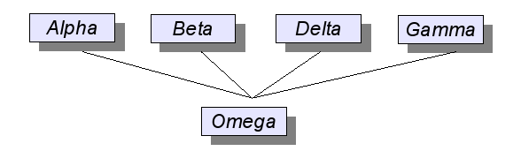

...making Linux just a little more fun!
Ben Okopnik [ben at linuxgazette.net]
----- Forwarded message from Stephen Russell <srussell@racepointgroup.com> -----
Subject: Six Years Old And Still Causing Problems For Linux Users Date: Wed, 13 Feb 2008 13:56:56 -0500 From: Stephen Russell <srussell@racepointgroup.com> To: ben@linuxgazette.netHello Ben,
I thought you might be interested in the information below on a six-year-old virus that is still causing problems for Linux users. In fact, the problem is so common that 70 percent of Linux infections are because of the virus. In response to this problem, Sophos has made available a free detection tool for Linux users to determine if they are infected by the virus.
If you are interested in discussing this virus with Sophos, don't hesitate to contact me.
Best,
Stephen
Stephen Russell
Racepoint Group for Sophos
781-487-4609
==============================================================================
Six Year Anniversary for Linux Virus Rst-B - Are You Infected?
Sophos Makes Available Detection Tool for Linux Users
IT security and control firm Sophos is warning Linux users of the importance of properly securing their Linux systems, following findings from SophosLabs(TM) that a long established threat, known as Linux/Rst-B, is still infecting computers and servers.
Analysis of malware has shown almost 70 percent of the infections are due to this six-year-old malicious program. Today, SophosLabs has made freely available a small detection tool to help Linux users find out whether they are unwittingly infected with this virus.
Linux servers are very valuable to hackers, according to SophosLabs experts. Servers, by their nature, are rarely turned off and often found to be running no or insufficient protection against malware attacks. This makes the Linux systems ideal candidates for the role of controller in a botnet - the central control point when creating and managing an army of infected computers, known as bots or zombies. Where Linux systems are most often found to be running as a server, Windows machines are more frequently used at home or as a desktop machine in an office, and these computers are regularly switched off. This makes them less attractive as controllers, but ideal as bots or zombies.
Hackers typically gain control via weak SSH password or some other vulnerability. Once in, they install IRC based malware and use IRC channels to control their bots.
"The number of malware in existence is around 350,000, and while only a teeny number of these target Linux, it seems as though hackers are taking advantage of this false sense of security," said Carole Theriault, senior security consultant at Sophos. "It was very surprising to see that a six-year-old virus seems to be responsible for a large proportion of the malware collating in our Linux honeypot, and we hope that Linux users who aren't running security will at least run this tool to find out if they are infected with this granny virus."
Information on the Linux/Rst-B detection tool is available on the SophosLabs blog. Sophos underlines that running the detection tool will only detect versions of Linux/Rst-B.
[ ... ]
[ Thread continues here (6 messages/14.01kB) ]
Rick Moen [rick at linuxmafia.com]
Quoting Mike Orr (sluggoster@gmail.com):
> Found this in the EULA for MSN Messenger accounts:
>
> """
> Potentially Unwanted Software
>
> If you remove or disable "spyware", "adware" and other potentially
> unwanted software ("potentially unwanted software"), it may cause
> other software on your computer to stop working, and it may cause you
> to breach a license to use other software on your computer (such as
> where the other software installed the potentially unwanted software
> on your computer as a condition for your use of the other software).
> By using the features of the service intended to help you remove or
> disable potentially unwanted software, it is possible that you will
> also remove or disable software that is not potentially unwanted
> software. If a feature of the service prompts you before removing or
> disabling potentially unwanted software, you are solely responsible
> for selecting which potentially unwanted software the service removes
> or disables. Before authorizing the removal of any potentially
> unwanted software, you should read the license agreements for the
> potentially unwanted software.
> """
>
> LICENSE AGREEMENTS for spyware??? I'm supposed to recognize what kind
> of spyware has been surreptitiously been installed on my computer, and
> know where its license agreement is?
>
> Fancy Microsoft discouraging people from eradicating spyware, and
> threatening them with a potential license violation if they do.
You're misreading what they're saying, here, and in consequence being a bit unfair to our Redmondian friends.
They're saying that MSN Messenger service includes some anti-spyware features that might, in the process of doing its job, might accidentally disable some process you want to have continue to run. It says that the anti-spyware system monitor will pop up a screen asking you to vet what it wants to disable, and the responsibility's totally on you if you say "yes" and end up turning off something you later regret having disabled.
This reflects, in part, the pernicious way in which legitimate MS-Windows software has become at best poorly distinguishable from adware/spyware, and it's not unknown for the one to come bundled with the other, and for various (nominally legitimate) proprietary software packages to "phone home" information about the user, permission for which chicanery the user usually but not always has "consented to" (nominally) via misleadingly worded clauses in their licence agreements.
For perspective, it's also not unknown for this sort of treacherous behaviour to occur in proprietary applications for Linux. That's why, for example, my nameserver resolves the "remoteapproach.com" domain locally, because, even though I wouldn't touch Adobe Acrobat Reader with a ten-foot pole or an 11-foot Swede, visitors to my house sometimes do. (See: http://lwn.net/Articles/129729/)
Rick Moen [rick at linuxmafia.com]
https://thomas.apestaart.org/thomas/trac/wiki/projects/savon has:
What is Savon?
Savon is a program that allows you to store parts of a file system in
Subversion. It manages file contents, permissions, owner and group (by
name, not by id), and even SELinux security context. Layers allow re-use
of files among different hosts.
The command-line tool, savon, tries to follow svn in spirit as closely
as possible in expected behaviour, output, ... Of course, there are
different commands for the additional functionality, but your knowledge
of svn will carry over into your use of savon. (One important exception
is the add command, which is non-recursive by default. svn chose to make
this recursive, in contrast to CVS, and many a user has made the mistake
of adding a whole subtree to subversion when they just wanted one
directory added.)
What can I use it for?
* Use it to store configuration files, scripts, and other local
modifications for your one or more Unix hosts
* Use it to manage clusters of machines that share roles and can
thus share configuration from one central repository
* Use it to store the same type of information from your user
directory, again allowing you to share parts of these directory
layouts among multiple machines
High-level overview
Savon allows you to manage a part of your file system in an overlay.
This part can be the whole filesystem or root, or your home directory,
or something else.
This overlay is split up into one more more layers. The layers are
stacked top to bottom to represent the tree of revisioned nodes. If a
node is present in more than one layer, the version in the top-most
layer is used.
Typically, you would use a separate overlay for each host, and then
share common files in a layer. For example, on my home network, but also
on hosts of family and friends I maintain, I use the bottom-most layer
for files that should be the same on all hosts. This includes for
example authorized_keys for ssh, so that I can log in to every machine.
The layer above that is used for files that are related to the local
network configuration; for example, yum configuration files pointing to
local directories.
The top-level layer gets used for the host-specific files, including
interface definitions, a host ChangeLog, ...
Having separate layers thus makes it easy to share configuration and
files between machines.
A fellow Linux user group mailing list member speculated that Savon might be more suitable than Joey Hess's etckeeper for non-.deb-based systems such as RHEL / CentOS / Mandrake / PCLinuxOS / Gentoo / etc., because etckeeper is hooked into apt/dpkg so as to capture changes to /etc resulting from package operations. Having not tried etckeeper on a non-.deb system, I couldn't speak to that, but pass along his comment.
Meanwhile, Joey has merged patches that permit etckeeper to be back-ended by Mercurial, so one can now elect that version control system rather than git, if one prefers.
[ Thread continues here (2 messages/4.16kB) ]
MNZ [mnzaki at gmail.com]
Hi TAG, I have recently bought a NIC that uses the rtl8139 chip. I can't seem to get it working. I load the 8139too module but I still don't get /dev/eth0. I'm not sure how to go about fixing this so any help would be appreciated.
-- //MNZ\\
[ Thread continues here (25 messages/30.92kB) ]
Ben Okopnik [ben at linuxgazette.net]
On Wed, Feb 06, 2008 at 05:26:21PM -0500, Karl Vogel wrote:
> Some minor tweaks: I got rid of spaces, slashes, etc. in the filename.
I usually leave file names as they are unless I have reason to suspect something nasty in them (like a forward slash, which is the only character that's not allowed in filenames - at least in Unix). If I'm going to process them at all, I make it simple:
tr/A-Za-z0-9/_/cs;
This replaces any characters that don't appear in the first list with an underscore, and squashes any repeated underscores. If I'm feeling especially energetic, I might add the following:
s/^_?(.*?)_?$/$1.html/;
This will remove any leading/trailing underscores from the result. It's also a good place to add the '.html' extension.
> ---------------------------------------------------------------------------
> #!/usr/bin/perl -w
> # Created by Ben Okopnik on Thu Jan 24 13:39:27 EST 2008
>
> use strict;
>
> die "Usage: ", $0 =~ /([^\/]+)$/, " <html_file[s]_to_rename>\n"
> unless @ARGV;
>
> my $title;
>
> for (@ARGV) {
> open(F, $_) or die "$_: $!\n";
> {
> local $/;
> ($title) = <F> =~ /<title>\s*([^<\n]+)/i;
> }
> close(F);
>
> if ($title) {
> $title .= ".html";
> $title =~ s!/!-!g;
> $title =~ s/\s/-/g;
> $title =~ s/-&-/-and-/g;
> $title =~ s/--*/-/g;
> $title =~ s/-\././g;
> $title =~ s/[:,.]-/-/g;
> $title =~ tr/'";//d;
> }
> else {
> warn "$_: no title\n";
> next;
> }
>
> if (-f "$title") {
> warn "'$title' already exists\n";
> }
> else {
> print "$_ -> $title\n";
> rename($_, "$title") or die "rename $_: $!\n";
> }
> }
>
> exit(0);
This last line may be standard practice in C, etc., but it's unnecessary (and deprecated) in Perl. The same is true for the parens in your 'open', 'close', and 'rename' calls: punctuation that doesn't have a specific reason for being there should be omitted.
-- * Ben Okopnik * Editor-in-Chief, Linux Gazette * http://LinuxGazette.NET *
Amit Kumar Saha [amitsaha.in at gmail.com]
Hello,
I have a directory named "Book Reviews", so when I try to CD to it using:
$ cd /media/sda5/Writings\ \&\ Presentations/Book Reviews
I get:
bash: cd: /media/sda5/Writings & Presentations/Book: No such file or directory
of course, I do not have a directory named 'Book'
I then come across this http://librenix.com/?inode=7041
I got away with it after using:
$ cd /media/sda5/Writings\ \&\ Presentations/"Book Reviews"
Is there any other way other to deal with spaces?
Comments much appreciated!
Thanks, Amit
-- Amit Kumar Saha *NetBeans Community Docs Coordinator* Writer, Programmer, Researcher http://amitsaha.in.googlepages.com http://amitksaha.blogspot.com
[ Thread continues here (9 messages/13.26kB) ]
hari narayanan [haari_seshu at yahoo.com]
Sir,
I have visited your web-site for squid configuration reference. It's really helpful for me. Because i'm new to squid. Also i'm having a doubt regarding squid. The main purpose of the squid is load-balancing & security which hides our webserver from outside world. I'm going to put a two web server behind my squid. Where can I mention my web servers in squid configuration. and how I can test that my squid is refering my two servers if it's not having the cache. Please let me to know about it. I'm using squid 2 as my reverse proxy and Apache as my web servers with platform RHEL 4 u 4. Thanking you,
With Thanks & Regards, -- HARI NARAYANAN.S SOLUTION CENTRE, HO-MARKETING, HCL INFOSYSTEMS, HO, SECTOR-11, NOIDA.
[ Thread continues here (2 messages/2.21kB) ]
Paul Sephton [prsephton at gmail.com]
I have done a fair bit of my own "second guessing of the user" in the past, and where it comes to the g++ folks they generally get it right. Be that as it may, there is a rather irritating and dangerous compile-time warning in g++ version 4.1.2. that is to me, an ideal example of where acting with the best intention to protect the user from his own stupidity can backfire.
A pure virtual base class, or interface class definition is used when one would like to use the class definition without having access in any way to the implementation. Typically, a factory function creates objects of this type, and another factory function may be used to destroy them. One cannot use the 'new' keyword to create, or the 'delete' keyword to destroy objects of this type, as the object definition has no public constructor or destructor, and no base implementation for the virtual methods. However, one may call the objects methods; since they are all pure virtual declarations, one is guaranteed of their implementation in the subclass.
The following header is used to provide a pure virtual interface class and functions to create or delete instances of the class:
class abc {
public :
virtual void if_method1()=0;
virtual long if_method2()=0;
virtual bool if_method3()=0;
...
};
abc *abc_factory_new();
void abc_factory_delete(abc *);
when compiled, this emits the warning: `` warning: 'class abc' has virtual functions but non-virtual destructor''
which is only partially true, as there is no declaration for a destructor at all (either virtual or non-virtual). One might expect the following code to emit warnings both for the attempt to create an instance of 'abc' as well as the attempt to delete 'abc':
int main() {
abc *a = new abc();
delete a;
}
As it happens, we are warned when we try to create an instance of 'abc' (because of all the pure virtual functions) , but not warned at all when we delete the object directly. It would appear that g++ assumes that the coder has made a mistake, and creates a default (public non-virtual) destructor for the class anyway, regardless that we excluded definitions for the destructor to prevent accidental deletion. To add insult to injury, g++ then warns the coder that his [automatic] destructor is not virtual.
Just as well that it does warn you, since the destructor it automatically creates is not virtual, and therefore invoking delete against the virtual base class (which should have failed with a compiler error) would result in a potential memory leak.
The above warning is not a new one, and previous versions of the compiler would emit the warning when a destructor was declared as non-virtual in a class with virtual method declarations. For example,
[ ... ]
[ Thread continues here (4 messages/8.93kB) ]
Ben Okopnik [ben at linuxgazette.net]
----- Forwarded message from Bob McConnell <rvm@CBORD.com> -----
Subject: RSS feed problem Date: Tue, 5 Feb 2008 08:24:52 -0500 From: Bob McConnell <rvm@CBORD.com> To: editor@linuxgazette.netGood morning,
I am using Firefox 2.0.0.11 with Newsfox 0.8.3 to track your RSS feed at <http://linuxgazette.net/lg.rss>. Since I know that updates only happen once a month, I don't include LG in the regular refresh list, but check it manually the first few days of each month until I get the update.
However, for the past four months, there have not been any dates on the items in that feed. Therefore I have a mixed list with items from multiple months and no useful way to sort it by date. Is that an issue with the feed, or something on my end?
I do enjoy the Gazette. Although I started with SLS 1.02, I have been using Slackware at home since '93, and Red Hat/Fedora at work for the past two years. Unfortunately, we only have one small department using Linux and have to struggle with MS-Windows for company wide tools.
Thank you,
Bob McConnell Principal Communications Programmer The CBORD Group, Inc. 61 Brown Road Ithaca NY, 14850 Phone 607 257-2410 FAX 607 257-1902 Email rvm@cbord.com Web www.cbord.com
----- End forwarded message -----
-- * Ben Okopnik * Editor-in-Chief, Linux Gazette * http://LinuxGazette.NET *
[ Thread continues here (8 messages/7.83kB) ]
Suramya Tomar [security at suramya.com]
Hey Everyone, A friend of mine asked the following question and as far as I know its not possible but if I am wrong please correct me.
Basically what he wants to do is share files with windows systems over samba (with write/delete access) and restrict the number of files a user can delete at a time. So if a user (suramya) wanted to delete 2 files the system would let him delete it, but if he tried to delete 50 files it would stop it.
What do you think? Is it possible? What I told him was that either you give a user delete access or not but you can't limit by the number of files.
The easiest way I have found to remove delete access is to remove the write access to the parent directory containing the files. But the downside of this is that the users can't add new files. In this case since the users are programmers they have to have the ability to add new files to the directory.
So what are his options?
- Suramya
--************************************************************Name : Suramya Tomar Homepage URL: http://www.suramya.com
[ Thread continues here (9 messages/13.54kB) ]
Karl-Heinz Herrmann [kh1 at khherrmann.de]
Hi Ramon,
I didn't get round to discuss much of what you wrote with Daniel (Main Admin around here). He keeps himself busy with fixing multiseat machines which got broken by upgrades.... As a first decision we are going to put out an order for a large disk-raid system (max 24TB, initially 18 for budget reasons) which we'll run as NFS fileserver and it will have to double as backupsystem (two independent raid controllers) backing itself up, configs from all clients and some smaller data amounts on local disks plus homes on the then old fileserver.
If that disk space runs full we'll have hopefully new budget and can think about tape solutions etc. Right now raw disc space is getting scarce.
The number crunchers are still not quite certain --- the Multicore AMD is still on the wishlist, but delivery seems to be postponed and postponed again.
> If you're willing, we could also set up a call to discuss or > alternatively use IRC ? > There's way too many options depending on setup discussion etc.
Yes, I certainly would like to discuss a few things to see what might be optimal solutions.
> We've been through 4 generations of storage architecture including > on-line but off-site backup.
that "off-site" part is starting to worry me a bit. We have some off-site backup but not everything by far. Mostly homes and the most important written stuff (Programs, papers, etc.). Original measurement data are just to huge for that off-site backup (*non* GB ethernet doesn't help there).
K.-H.
[ Thread continues here (3 messages/3.95kB) ]
aman verma [verma.aman81 at gmail.com]
dear sir/ma'm i just want to know if we are using fork() system call again and again then what will be the output like
main()
{
fork();
printf("\n my id=%d and and my parent id=%id",getpid(),getppid());
fork();
printf("\n my id=%d and and my parent id=%id",getpid(),getppid());
}
please forward me the answer
thanks and regards, amandeep verma
[ Thread continues here (2 messages/1.79kB) ]
[ In reference to "Hollywood, Linux, and CinePaint at FOSDEM 2008" in LG#147 ]
Robert E A Harvey [bobharvey at europe.com]
"What kind of crazy open source world is this where copyright zealot Disney funds development of LGPL code in Wine to replace Windows? Why isn't the film industry doing more to support open source development?"
Or, indeed, allowing me to watch DVDs on Linux at home. I have tried to buy e.g. LinDVD for real cash-money and been told I need to run windows.
Bob Harvey Lincolnshire UK
[ In reference to "Booting Linux in Less Than 40 Seconds" in LG#147 ]
MNZ [mnzaki at gmail.com]
Hi TAG, I really enjoyed this article, just what I need! But there's only one problem, the DMA on the hard-disk. I've always used a very similar approach to the one mentioned in the article to set DMA on on my disks, the problem is INIT doesn't actually start when waking up from hibernation and so DMA is not set which makes reading the image (and booting, therefore) a very painfully long process. Any ideas on other ways to set DMA that don't involve INIT?
-- //MNZ\\
[ Thread continues here (6 messages/5.81kB) ]
[ In reference to "Fine-tuning SpamAssassin" in LG#105 ]
Neil Youngman [ny at youngman.org.uk]
I'm not sure there's a question in there?
Also I'm not familiar with the Perl interface for SpamAssassin. I'm forwarding this to The Answer Gang to see if any of them can offer you a more useful response.
Neil Youngman
On Monday 28 January 2008 07:43, you wrote:
> Hi, > > In my project I am going to send newsletters to our clients. Here I need to > validate my newsletter(content). Also I need to show the content's Spam > score. I need to check the spam score for only body content not header. I > have tried with Mail-Spamassassin-3.2.4, the SA is written in Perl API. The > SA will check the both header and body content like , > > .ie n .IP "$score = $status\fR\->\fIget_head_only_points()" 4 > .el .IP "$score = \f(CW$status\fR\->\fIget_head_only_points()\fR" 4 > .IX Item "$score = $status->get_head_only_points()" > Return the message's score as computed for auto\-learning, ignoring > all rules except for header-based ones. > .ie n .IP "$score = $status\fR\->\fIget_learned_points()" 4 > .el .IP "$score = \f(CW$status\fR\->\fIget_learned_points()\fR" 4 > .IX Item "$score = $status->get_learned_points()" > Return the message's score as computed for auto\-learning, ignoring > all rules except for learning-based ones. > .ie n .IP "$score = $status\fR\->\fIget_body_only_points()" 4 > .el .IP "$score = \f(CW$status\fR\->\fIget_body_only_points()\fR" 4 > .IX Item "$score = $status->get_body_only_points()"* > * > > I've been your topic "Fine-tuning SpamAssassin" in > http://linuxgazette.net/authors/youngman.html
[ Thread continues here (2 messages/3.16kB) ]
[ In reference to "Right To Your Own Devices" in LG#114 ]
Kapil Hari Paranjape [kapil at imsc.res.in]
Hello,
----- Forwarded message from lee hughes <toxicnaan@gmail.com> -----
Date: Sun, 24 Feb 2008 15:09:19 +0000 From: lee hughes <toxicnaan@gmail.com> To: kapil@imsc.res.in Subject: tkb:Device Mapper?Helllo,
There still not any good device mapper documentation out there, you page was a great help to me!
I am trying to do this.
I have a loopback filesystem, that I am trying to snapshot.
so
myfile--------/dev/loop0
cow1--------/dev/loop1 cow2--------/dev/loop2 cow3--------/dev/loop3 cow4--------/dev/loop4
you document allowed me to a snapshot of /dev/loop0, and cow the changes to /dev/loop1
can, I do the same with loop2,3,4?
i.e. I have 4 file system cow, from the same filesystem?
hope you can help, thanks for a great article.
----- End forwarded message -----
[ Thread continues here (4 messages/3.93kB) ]
[ In reference to "Encrypted Storage with LUKS, RAID and LVM2" in LG#140 ]
Andrej Kartashov [a-m-kartashov at yandex.ru]
Hello,
Please pay attention to unmounting script in "Mounting and umounting" section:
================== #!/bin/sh umount /backup lvremove backuplv vgremove cryptvg cryptsetup remove crypt1 cryptsetup remove crypt2 ==================
Commands `lvremove backuplv` and `vgremove cryptvg` will remove logical volume and its volume group. It is not unmounting but ~erasing~
I knew nothing about lvm while reading your article so I deleted important data while running 'unmounting' script blindly.
Please correct the article.
Best regards,
Andrej
[ Thread continues here (5 messages/7.35kB) ]
[ In reference to "SMTP Authentication with Postfix" in LG#142 ]
René Pfeiffer [lynx at luchs.at]
Hello, Stefan!
On Feb 19, 2008 at 2226 -0500, Stefan S appeared and said:
> > Hello: > > I just wanted you to know that I am sending you this email thru your > configuration settings on your SMTP Auth for Postfix page. > > Squid configurationry much for writing a clear, concise page for a issue that can > be clear as mud on Linux/Unix MTA's. I am relaying thru my (new) canadian > ISP SMTP servers without issue, and I did not know how to set this up > before.. > > I just wanted you to know your efforts are not in vain!
You're welcome, and thanks for the feedback. SMTP AUTH is more popular than it was years ago, so I thought sharing how to configure it with Postfix would be a good idea.
Best wishes, René.
[ In reference to "Measuring TCP Congestion Windows" in LG#136 ]
René Pfeiffer [lynx at luchs.at]
[[[ Greetings to Indonesia! Thanks to this thread, I've learned the word "Balasan", which seems to mean "re:". Is this a word in Malay, or Bahasa Indonesia? -- Kat ]]]
Hello!
On Feb 15, 2008 at 1135 +0700, Niko Wilfritz Sianipar Sianipar appeared and said:
> I,ve read your article about measuring tcp congestion window. Maybe I > can ask you, how to use tcp_info structure in my Apache code (more > specifically in sendfile_it_all function in core_filters.c. I want to > get the time to transfer last byte sent in order to schedule the > packet sent to client according to that metric), cause I really realy > confused with the Apache source code. Or, do you know what part in > Apache that provide the time to transfer last by sent to client.
The tcp_info structure contains statistics derived from an active TCP connection. getsockopt() fills the structure with data. An example function call from my article in #136 looks like this:
getsockopt( tcp_work_socket, SOL_TCP, TCP_INFO, (void *)&tcp_info, &tcp_info_length );
I looked into the code for core_filters.c in a httpd 2.2.8 distribution. Basically the sendfile_it_all() function reads a file and sends it to the network by using sendfile(). There's not much you can tune there since sendfile() does most of the buffering. You could periodically call getsockopt() with the TCP_INFO option, but you'd only get the TCP parameters. You cannot influence the TCP connection when it transfers date, it is handled by the kernel. You can only use one of the TCP congestions algorithms and set some parameters of the TCP stack (either through /proc/sys/net/... or by using socket options such as TCP_CORK).
If you want to do any timing you have to do the buffering yourself, send chunks of data and take the time after every buffer transmit. That's what I did in my example code, but that's not what you want to do in production code. The Linux kernel has the TCP stack and should deal with the details. The kernel also keeps track of TCP parameters used with recent clients. An application usually doesn't see all of this.
As far as the Apache code is concerned, I don't know where or whether Apache stores the time of transfers. There are some options for the socket code, so I'd look for the persistant connections (KeepAlive, etc.) or all things that deal with the socket handling.
Best, René.
[ Thread continues here (6 messages/10.59kB) ]
[ In reference to "/okopnik.html" in LG#issue84 ]
Ben Okopnik [ben at linuxgazette.net]
On Wed, Feb 06, 2008 at 05:26:21PM -0500, Karl Vogel wrote:
> Some minor tweaks: I got rid of spaces, slashes, etc. in the filename.
I usually leave file names as they are unless I have reason to suspect something nasty in them (like a forward slash, which is the only character that's not allowed in filenames - at least in Unix). If I'm going to process them at all, I make it simple:
tr/A-Za-z0-9/_/cs;
This replaces any characters that don't appear in the first list with an underscore, and squashes any repeated underscores. If I'm feeling especially energetic, I might add the following:
s/^_?(.*?)_?$/$1.html/;
This will remove any leading/trailing underscores from the result. It's also a good place to add the '.html' extension.
> ---------------------------------------------------------------------------
> #!/usr/bin/perl -w
> # Created by Ben Okopnik on Thu Jan 24 13:39:27 EST 2008
>
> use strict;
>
> die "Usage: ", $0 =~ /([^\/]+)$/, " <html_file[s]_to_rename>\n"
> unless @ARGV;
>
> my $title;
>
> for (@ARGV) {
> open(F, $_) or die "$_: $!\n";
> {
> local $/;
> ($title) = <F> =~ /<title>\s*([^<\n]+)/i;
> }
> close(F);
>
> if ($title) {
> $title .= ".html";
> $title =~ s!/!-!g;
> $title =~ s/\s/-/g;
> $title =~ s/-&-/-and-/g;
> $title =~ s/--*/-/g;
> $title =~ s/-\././g;
> $title =~ s/[:,.]-/-/g;
> $title =~ tr/'";//d;
> }
> else {
> warn "$_: no title\n";
> next;
> }
>
> if (-f "$title") {
> warn "'$title' already exists\n";
> }
> else {
> print "$_ -> $title\n";
> rename($_, "$title") or die "rename $_: $!\n";
> }
> }
>
> exit(0);
This last line may be standard practice in C, etc., but it's unnecessary (and deprecated) in Perl. The same is true for the parens in your 'open', 'close', and 'rename' calls: punctuation that doesn't have a specific reason for being there should be omitted.
-- * Ben Okopnik * Editor-in-Chief, Linux Gazette * http://LinuxGazette.NET *
[ In reference to "A dummies introduction to GNU Screen" in LG#147 ]
Kapil Hari Paranjape [kapil at imsc.res.in]
Hello,
This is a nice intro to screen.
As you might expect ... some additional pointers from a long time
screen user 
1. Your method of binding the C-\ key to command might cause you grief. The suggested method is "escape ^\\". You can also bind a "function key" to the screen command with something like "bindkey -k <keyname> command". The list of <keyname>s can be found in "man -s5 termcap" under the section "String Capabilities". I use "F1" which is the F11 key. (It should have been F12 but that is for the window manager). You can also use some command like "escape ^^^" to override the default C-a being bound to the escape key. There currently seems to be no way to specify "no escape key" to screen which is a bit unfortunate! 2. You can also use "C-a '<initial char(s) of window name>" to switch to a window for example "C-a 'Eli" followed by enter will switch to that window.
Some other things to have fun with in screen are "nethack mode" and more seriously cut-and-paste and multi-user mode.
Regards,
Kapil. --
[ Thread continues here (2 messages/2.07kB) ]
[ In reference to "TCP and Linux' Pluggable Congestion Control Algorithms" in LG#135 ]
hiren jebaliya [hiren_64 at yahoo.com]
Sir, I am a student of BE Electronics and communication, As a part of final year cirriculum we have a subject in which we have to make a project. so we choose to make a project in which we will measure performance of various TCP variants like TCP tahoe, reno, new reno, sack etc with help of netword emulator tool NISTnet. we have faced a problem that current version of linux (fedora) uses sack but we want to use older version of TCP like tahoe and reno etc so what should we do is there kernel available where we could get this version and could install them or is that we just have to modify the codes in networkstack please tell us the solution which is possible and also state that through which link will we get the required kernels and the name of kernel if possible. Thanking you. H Jebaliya.
[ In reference to "App of the Month" in LG#147 ]
reine dedeurwaerder [reined at gmail.com]
rich over(in depth)view EVERY coder should check: Tech_Talk__Linus-Torvalds-on-Git.flv
[ Thread continues here (4 messages/1.99kB) ]
[ In reference to "Mailbag" in LG#147 ]
Jon Schewe [jpschewe at mtu.net]
Re: large file server/backup system: technical opinions?
For backups that take longer than overnight, why not just use snapshots in LVM?
-- Jon Schewe | http://mtu.net/~jpschewe If you see an attachment named signature.asc, this is my digital signature. See http://www.gnupg.org for more information. For I am convinced that neither death nor life, neither angels nor demons, neither the present nor the future, nor any powers, neither height nor depth, nor anything else in all creation, will be able to separate us from the love of God that
[ In reference to "Getting Started with Linux Mint" in LG#137 ]
Chuck 2.0 [chuck418 at gmail.com]
Loved the article, but what if you have DHCP and Linux Mint still doesn't find the Internet (so no updates of new programs;{ Went to Network and filled in workgroup and machine names, my router hands out IPs...System see's the hardware...do I have to Mount the eth0, and if so how does one do that. Thanks for the great web page, and in advance for your help. This is the 4th Linux I've tried over the years, looks ALMOST easy enough for me! This machine dual boots to Xp and that can see the Internet, home built Athlon 1700 machine, multiple hard drives, wired to the router, and through that to cable.
best,
chuck 2.0
-- "And as imagination brings forth the forms of things unknown, the Magician's Will turns them to shapes, and gives to airy nothing a local habitation and a name."
[ Thread continues here (2 messages/3.02kB) ]
[ In reference to "Right To Your Own Devices" in LG#114 ]
René Pfeiffer [lynx at luchs.at]
Hello!
While getting in touch with some colleagues who had a slight misfortune with the dd command and image files, Google directed me to the "Right To Your Own Devices" article in LG #114. The device mapper is indeed very, very useful.
Image you have a big dump file created with dd from a whole disk.
dd if=3D/dev/hda of=3D/mnt/usb/big_dump.img
Now imagine your /dev/hda device was a disk with multiple partitions. How can you access the partitions individually? Try the device mapper. By using the dmsetup command directly you have to use offsets to get to the right partition(s). There's an easier way. The command kpartx can automatically create device mapper devices from a dumpfile. kpartx is part of the "multipath-tools" package (at least on Debian, Ubuntu and Gentoo). Create a loopback device backed by the image file and use kpartx:
losetup /dev/loop0 /mnt/usb/big_dump.img kpartx -a /dev/loop0
After that you will find the mapped devices for every partition in /dev/mapper/. You can remove the devices by using the following command:
kpartx -d /dev/loop0
"kpartx -l /dev/loop0" gives you a list of the partitions with lines that can be used in a dmsetup description table.
Make sure that your kernel and your device mapper utils match. Best use recents versions or the ones from your distribution.
Best, René.
[ Thread continues here (2 messages/2.25kB) ]
Like a graveyard scene from an old B-movie, SCO is again rising as one of the UnDead.
A new cash infusion from a new set of partners will keep SCO from becoming moribund. The funds, up to $100 million, are coming from New York-based Stephen Norris Capital Partners and an undisclosed Middle Eastern investor. This gives SCO additional funds for the upcoming trial date but at the cost of privatizing the company and its assets. This is a better attempt at reorganization than the previous York Group proposal, which was deficient on legal grounds. It also ejects the former CEO Darl McBride, with a tidy sum and liability protection. Some comments on Slashdot and elsewhere have suggested the arrangement may help hide any past links to Microsoft, assuming there were any.
According to a February 15 posting on Groklaw, the new deal may better provide for the "...avoidance of any antitrust worries Microsoft might conceivably face from airing of linen." The Groklaw posting adds the following concerns about the new Memorandum of Understanding (MOU):
"Suitably insured, assuming they can find an insurance company stupid enough to take on these liabilities, the company will go private and then give its full and aggressive attention to raping and pillaging the FOSS community some more with SCO's bogo lawsuits against Linux. Well, that's how I read it. It is, of course, at least in part also a shot across the bow of IBM. Still not interested in settling, the MOU fairly screams?"
But SCO doesn't actually have a $100M "War chest" from its new partners. It's really a $5 million dollar deal with a $95 million line-of-credit, subject to due diligence and discovery by the lenders. And the 'credit' comes at a high interest rate.
Jim Zemlin, the president of the Linux Foundation, puts down the financial threat more succinctly:
"The terms of the proposal are publicly available with the court, and what they show is that SCO would receive only $5 million dollars in cash - the rest could only be drawn down at an exorbitant rate of more than 17%. Not a very efficient cost of capital..."
And if Novell and IBM prevail in court, SCO will owe a lot more than that.
See Groklaw on the MOU: http://www.groklaw.net/article.php?story=20080215072706542
Also see: http://www.businessweek.com/ap/financialnews/D8UQEJBO1.htm
In an announcement regarding FOSSology and FOSSBazaar, HP will help companies address the legal, financial and security risks faced when adopting free and open source software (FOSS). To help enterprise customers mitigate these kinds of risks and realize the full business benefits of free and open source software, HP has introduced FOSSology and FOSSBazaar - the industry's first open source initiatives dedicated to these goals.
FOSSology is based on the tools HP uses to effectively manage its own use of free and open source software. It is designed to help users address deployment issues such as the acquisition, tracking and licensing of FOSS. This toolset is free and downloadable from FOSSology.org for immediate use under the General Public License (GPL) version two.
FOSSBazaar makes HP's expertise freely available to the software community as part of a collaborative effort with industry-leading software vendors and the Linux Foundation. Coverity, DLA Piper, Google, Novell, Olliance Group, OpenLogic and SourceForge have joined HP to offer online resources, educational documentation and community interaction to address FOSS business issues and promote best FOSS governance practices.
Intel has released a developer software initiator kit to create Fibre Channel over Ethernet (FCoE) solutions for the Linux. FCoE is a specification proposed by Cisco that will allow Fibre Channel SAN traffic to run over Ethernet. Consolidating LAN and SAN traffic onto a single fabric can simplify network infrastructure and reduce data center costs.
As part of the package, Intel has included a target simulator, so Linux developers can test and modify the FCoE software stack. Open-FCoE.org is open to all FCoE developers for source code download, code contribution and feedback. (Click here to see a diagram.)
Layers above FC-2 remain unchanged so the same FC fabric and traffic management are used to link existing SAN switches.
Intel is leading the Ethernet Enhancements efforts in the IEEE Intel to create a lossless Ethernet fabric. Intel expects that FCoE will be quickly become an industry standard for network storage.
Jordan Plawner, Intel Storage Product Planner, told the Linux Gazette: "We are taking Fibre Channel and putting it on top of an Ethernet transport so the server and target only see Fibre Channel. Our approach is very evolutionary, not revolutionary, and makes for a nice deployment."
All major Linux distros have iSCSI initiators. Intel wants all OS's in the future to ship with a stack that supports both iSCSI and FCoE.
"Server virtualization, database growth and compliance requirements have created a greater need for network storage," said Pat Gelsinger, senior vice president and general manger of Intel's Digital Enterprise Group. "FCoE makes it easier and less expensive to connect servers to the SAN. ... We expect the Open Source community to use this initiator stack to create reliable, standards-based FCoE solutions for their customers."
The FCoE software package is now available for download at http://www.Open-FCoE.org and can be modified according to the terms of the GPLv2 license. The FCoE specification is expected to be completed in 2008.
Software Development West 2008
March 3 - 7, Santa Clara, CA
http://sdexpo.com/2008/west/register.htm
O'Reilly Emerging Technology Conference 2008
March 3 - 6, Marriott Marina, San Diego, CA
http://conferences.oreilly.com/etech
Sun Tech Days
March 4 - 6, Sydney, Australia
http://developers.sun.com/events/techdays
CeBIT 2008
March 4 - 9, Hannover, Germany
http://www.cebit.de/
DISKCON Asia Pacific
March 5 - 7, Orchid Country Club, Singapore
Contact: pslim@idema.org
Data Protection Summit
March 16-21, Salt Palace, Salt Lake City, UT
http://www.dataprotectionsummit.com/
Novell BrainShare 2008
March 16 - 21, Salt Palace, Salt Lake City, UT
http://www.novell.com/brainshare
(Early-bird discount price deadline: February 15, 2008)
EclipseCon 2008
March 17 - 20, Santa Clara, CA
http://www.eclipsecon.org/
($1295 until Feb 14, higher at the door; 15% discount for alumni and Eclipse members)
AjaxWorld East 2008
March 19 - 20, New York, NY
http://www.ajaxworld.com/
SaaScon
March 25 - 26, Santa Clara, CA
http://www.saascon.com
MDM Summit 2008
March 30 - April 1, San Francisco, CA
http://www.sourcemediaconferences.com/MDM/register.html
MuleCon 2008
April 1 - 2, San Francisco, CA
http://www.mulesource.com/mulecon2008/
Sun Tech Days
April 4 - 6, St. Petersburg, Russia
http://developers.sun.com/events/techdays
RSA Conference 2008
April 7 - 11, San Francisco, CA
http://www.RSAConference.com
(save up to $700 before January 11, 2008)
2008 Scrum Gathering
April 14 - 16, Chicago, IL
http://www.scrumalliance.org/events/5--scrum-gathering
MySQL Conference and Expo
April 14 - 17, Santa Clara, CA
http://www.mysqlconf.com
Web 2.0 Expo
April 22 - 25, San Francisco, CA
http://sf.web2expo.com
Interop Las Vegas - 2008
April 27 - May 2, Mandalay Bay, Las Vegas, NV
http:://www.interop.com/
JavaOne 2008
May 6 - 9, San Francisco, CA
http://java.sun.com/javaone
ISPCON 2008
May 13 - 15, Chicago, IL
http://www.ispcon.com/
Free Expo Pass Code: EM1
Forrester's IT Forum 2008
May 20 - 23, The Venetian, Las Vegas, NV
http://www.forrester.com/events/eventdetail?eventID=2067
DC PHP Conference & Expo 2008
June 2 - 4, George Washington University, Washington, DC
http://www.dcphpconference.com/
Symantec Vision 2008
June 9 - 12, The Venetian, Las Vegas, NV
http://vision.symantec.com/VisionUS/
Red Hat Summit 2008
June 18 - 20, Hynes Convention Center, Boston, MA
http://www.redhat.com/promo/summit/
Dr. Dobb's Architecture & Design World 2008
July 21 - 24, Hyatt Regency, Chicago, IL
http://www.sdexpo.com/2008/archdesign/maillist/mailing_list.htm
Linuxworld Conference
August 4 - 7, San Francisco, CA
http://www.linuxworldexpo.com/live/12/
The PostgreSQL Global Development Group has released version 8.3 which includes a number of new and improved features that will enhance PostgreSQL for application designers, database admins, and users with more than 280 patches created by PostgreSQL contributors from 18 countries.
There is also SSPI GSSAPI support.
For more information and case studies, please visit the 'On the Record' blog at http://blogs.sun.com/ontherecord/entry/hot_off_the_presses_postgresql
Firefox 3 Beta 3 is available for download. This is the eleventh developer
milestone, which focused on testing the core functionality and the many new
features and changes to the platform scheduled for Firefox 3. Ongoing
planning for Firefox 3 can be followed at the Firefox 3 Planning Center, as
well as at http://mozilla.dev.planning and on
irc.mozilla.org in #granparadiso.
New features and changes in this milestone that require feedback include:
(You can find out more about all of these features in the "What's New" section of the release notes.)
Mozilla Messaging is a new mail-focused subsidiary of the non-profit Mozilla Foundation. The initial focus for Mozilla Messaging is the development of Thunderbird 3 which will deliver significant improvements, including integrated calendaring, better search and enhancements to the overall user experience. Thunderbird is a free, open source email application that is used by millions of people around the world and is built using the same open source development model as Firefox.
For more information about the Mozilla Messaging launch, see the press release.
Sun Microsystems has announced that it will purchase innotek, the provider of the open source virtualization software called VirtualBox. By enabling developers to more efficiently build, test, and run applications on multiple platforms, VirtualBox will extend the Sun xVM platform onto the desktop and strengthen Sun's leadership in the virtualization market.
With over four million downloads since January 2007, innotek's open source VirtualBox product has been established as a leading developer desktop virtualization platform. VirtualBox enables desktop or laptop PCs running the Windows, Linux, Mac, or Solaris operating systems to run multiple operating systems side-by-side, switching between them with just a click of the mouse.
"VirtualBox provides Sun with the perfect complement to our recently announced Sun xVM Server product," said Rich Green, executive vice president, Sun Software. "Where Sun xVM Server is designed to enable dynamic IT at the heart of the datacenter, VirtualBox is ideal for any laptop or desktop environment and will align perfectly with Sun's other developer focused assets such as GlassFish, OpenSolaris, OpenJDK and soon MySQL as well as a wide range of community open source projects, enabling developers to quickly develop, test, and deploy the next generation of applications."
VirtualBox is open source, and can be freely downloaded without the hassle of payment or frustrating license keys at http://virtualbox.org or http://openxvm.org. The download is less than 20 megabytes and is easily installed on any modern x86 architecture laptop or desktop system running Windows, Linux, Mac, or Solaris operating systems. Supported guest operating systems include all versions of Windows from 3.1 to Vista, Linux 2.2, 2.4 and 2.6 kernels, Solaris x86, OS/2, Netware, and DOS.
The Sun xVM family of products integrates virtualization and management to help customers better manage both physical and virtualized assets across heterogeneous environments. Previously announced products in the Sun xVM line include Sun xVM Server and Sun xVM OpsCenter. Sun xVM Server is a datacenter grade, bare-metal virtualization engine that can consolidate Windows, Linux and Solaris operating system instances. Sun xVM Ops Center is a unified management infrastructure for both physical and virtual assets in the datacenter. More information about Sun xVM solutions can be found at http://www.sun.com/xvm.
VMware will acquire Thinstall, an application virtualization software company in San Francisco. VMware is acquiring Thinstall to expand its desktop virtualization capabilities to better provision, deploy, and update desktop environments.
Thinstall decouples applications from underlying operating systems, improving isolation and portability for applications across desktop environments. Thinstall's agentless approach to application virtualization requires no pre-installed software on physical or virtual PCs and no new deployment infrastructure or management tools. Thinstall's architecture integrates into existing application management systems to deliver virtualized applications across a variety of operating system versions and enables applications to move with users as needed. Thinstall significantly decreases the time to value of a software application and reduces the overhead of costly integrations. For more information about Thinstall please visit http://www.vmware.com/go/Thinstall.
VMware also will acquire services-related assets from Foedus. VMware intends to leverage Foedus' application and desktop virtualization services expertise to help VMware partners.
Talkback: Discuss this article with The Answer Gang
Howard Dyckoff is a long term IT professional with primary experience at
Fortune 100 and 200 firms. Before his IT career, he worked for Aviation
Week and Space Technology magazine and before that used to edit SkyCom, a
newsletter for astronomers and rocketeers. He hails from the Republic of
Brooklyn [and Polytechnic Institute] and now, after several trips to
Himalayan mountain tops, resides in the SF Bay Area with a large book
collection and several pet rocks.
Howard maintains the Technology-Events blog at
blogspot.com from which he contributes the Events listing for Linux
Gazette. Visit the blog to preview some of the next month's NewsBytes
Events.

By Rick Moen
[ This is actually a series of exchanges between Rick Moen and several
other people concerned with this issue that has been converted to an
article. E-mail headers, etc. have been removed; original layout has been
preserved as much as possible; a bit of extra punctuation has been added to
denote meta-content.
-- Ben ]
[ RM adds: For context, at this writing, Microsoft Corporation has pending a very high-priced hostile bid to purchase Yahoo Corporation, which owns Zimbra. ]
Quoting Don Marti: > Dick Morrell on the impact on Zimbra: > http://blog.dickmorrell.org/?p=532 > > Wikipedia article on the future of Zimbra: > http://en.wikipedia.org/wiki/FoxPro_2
(Will forward this post to Dick, whom I think I've known even longer than you have, Don. I've [also] asked Dick Morrell's permission to publish any remarks he might have in response. Will forward, if he has anything to say and is willing.)
The true, functional acid test of whether a codebase is genuinely open source as claimed is forking: It must be possible, when push comes to shove (e.g., the company producing it being bought out by Microsoft) to fork off a copy, independently develop it, and continue to use it for any purpose and redistribute it without charge (or with charge, if the redistributor prefers).
So: Questions about whether Zimbra is really open source may soon get resolved -- the hard way.
The right to fork includes the right to create arguably foolish, annoying forks for bad reasons, e.g., the IPcop fork of Dick's Smoothwall project. It's natural that developers like Dick would inherently feel ambivalent about the right to fork, feeling the attraction of licensing restrictions that "would have stopped IPcop in their tracks" (Dick's wording). It's only when you need to fork that the right to use code in any fashion, including removing runtime advertising, can become essential.
I have a feeling that Dick assumes, as I did, that Zimbra's still under the "Zimbra Public Licence" aka ZPL (MPL 1.1 + a mandatory runtime advertising clause often called "Exhibit B"). It's not. I've only recently caught up on this myself: It's now under an even newer licence called Yahoo Public License (YPL) v. 1.0.
ZPL was one of about two dozen clones of SugarCRM's MPL 1.1 + runtime advertising clause[0], each deployed by about the same number of thinly capitalised Web 2.0 startups, many of them with interlocking Board of Directors and Advisers[1]. Each such licence required that "each user interface screen" of the application bear the company's trademarked logo, advertising text, and linkback -- and at the same time specifically denied recipients a trademark licence. Each such licence was loudly proclaimed to be open source, but, if you asked why the firm was consistently failing to submit it for OSI certification, you got silence or evasion.
The truth of the matter was: They were all carefully avoiding so doing, because they knew their licences would be rejected as violating (at least) OSD provisions #3 (derived works), #6 (discrimination against particular fields of endeavour), and #10 (technological neutrality).
Advocates asserted that they were merely trying to ensure "attribution" -- which was transparent rubbish: The right to retention of author attribution in software source code is already automatic in copyright law and doesn't require any licence provision[2], but SugarCRM, Zimbra, et alii actually wanted something more than, and different from, that: They wanted to require that all derivative works retain their runtime advertising displays, placed in front of the user's eyeballs on "each user interface screen". These firms then made the non-sequitur claim that their licence was automatically open source because its terms were the result of combining two OSI-approved licence, MPL 1.1 and the extremely obscure "Attribution Assurance License" aka AAL.[3]
They called their aim merely "attribution" and implied that it was a just claim. Bruce Perens, an early critic, politely called it a "badgeware" restriction. I, covering the issue for Linux Gazette, became over time rather more blunt, and characterised it as mandatory runtime advertising.
One of the more cooperative of the firms, Socialtext, finally set up a rather tentative trial balloon with OSI, something called the "Generic Attribution Provision" aka GAP[4], a paragraph they asked OSI to certify as open source if appended to some unspecified subset of the 65-odd OSI-approved licences.[5] Note that, as usual, Socialtext did not submit the "Socialtext Public License" that it was in fact using for its commercial wiki-software product: It wanted OSI to commit to a different licence it did not use, to test the waters.
OSI's outside advisors, including me, unanimously found the "GAP" proposal to fail OSI standard by a country mile[6] -- and the firms using modified-MPL licensing for their Web apps started feeling more public heat over their questionable claim of producing public source, and their evasion of the OSI.
About this time, I also started pointing out an even more peculiar aspect of this situation: The firms obviously had been attempting to do copyleft, i.e., requiring that third parties deploying derivatives of their Web apps share back code, but had picked MPL, a totally unsuitable licence lacking an "ASP clause" to enforce code shareback on hosted applications.[7] Leaving aside OSI approval for a moment, I asked, "What the Hell are you guys trying to accomplish? You go out of your way to pick a copyleft licence to modify, but then pick one (MPL) whose copyleft clause doesn't work in your market. You claim you just want "attribution", but ignore people who point out that preservation of real attribution (in source code and docs) is already mandated by law, and all you've really done is ensure that third-party commercial users need to carry your advertising and live in fear you'll sue them for trademark violation. That sort of impaired usability you call open source?"[8]
Quite a long time later, to their and attorney Mark Radcliffe's credit, Socialtext did come up with a much more modest (still MPL 1.1-based) mandated runtime advertising licence, Common Public Attribution License 1.0 (CPAL).[9] CPAL's runtime encumbrance is so very mild, and so careful to avoid the earlier problems with OSD #3, 6, and 10 that it easily passed OSI approval, and was adopted by most of those couple-dozen Web 2.0 firms -- but not Zimbra.
Zimbra got bought by the same Yahoo that is now Microsoft's daily blue-plate special, which somewhere along the line changed the Zimbra codebase to YPL 1.0 -- which turns out to have gratuitously different wording from SugarCRM/Socialtext/etc.'s original and problematic MPL 1.1 + mandated runtime advertising licence, but manages to replicate and perpetuate all of its problems, including the implied threat of trademark suits.[10]
If Dick thought ZPL was open source, it's likely he considers YPL to qualify, too. Getting back to the original point, I figure we'll find out who's right, within the next year or two.
My prediction: The noxiousness of the "attribution" (in English: mandated runtime advertising) requirement, combined with the trademark threat that will now be backed by Microsoft Corporation's cash, will kill any forking efforts, and (unless a miracle happens and Microsoft continues to back it, or sells its rights, or fails to acquire Yahoo at all) the Zimbra project will die -- or at least all YPL-covered code will have to get rewritten from scratch before it can live again.
(So, Dick, you're wrong. Nyah-nyah. ;-> )
[1] I won't name any names, but I've seen a couple of these people writing in the IT industry press to, for example, tout the alleged buyout market value of firms with which they had insider status (and that they didn't see fit to mention).
[2] Well, sort of. That is absolutely true in most of the world. Most EU member states and Australia, for example, recognise that right as what is called "authors' moral rights" in the European civil law tradition. One major industrialised country's copyright statute lacks such a specific clause: the USA.
The Visual Artists Rights Act (1990) amended the USA's Federal copyright statute (title 17 of the United States Code) to create 17 U.S.C. 106(a), creating an explicit right of correct author attribution for visual works only (e.g., film, television). Software is considered a "literary work" for purposes of US Federal copyright law. (Until recently, I'd misread section 106(a), failing to notice its scope restriction.)
The international Berne Convention treaty (article 6bis) mandates protection of "moral rights" for in-copyright works, but the USA, although a signatory, declined to enact any such explicit protection at the level of Federal copyright law, on the extremely shaky theory that the matter is adequately covered in other applicable law.
That is not to say that authors to whose works others wrongly claim authorship have no recourse: It just means that it's a weak point in US copyright law. Authors would have to use other theories of law. For example, The SCO Group sued Novell in Utah state court for the business tort of "slander of title" (and is still in the process of massively losing). Here is Pamela Jones of Groklaw, four years ago, explaining that tort: http://www.groklaw.net/article.php?story=2004021116125699&query=slander+of+title
In short, there is an automatic right to retain author attribution in most countries copyright statutes. The USA is an exception, in which software authors can protect that right, but by methods outside of copyright law.
[3] This claim was widely accepted until I bothered to compare SugarCRM's (and other similar firms') mandatory-advertising clause with AAL and found that this widespread claim of having merely reused AAL's wording was, in fact, obviously wrong.
[4]http://blogs.zdnet.com/BTL/?p=4124
http://crynwr.com/cgi-bin/ezmlm-cgi?3:mss:11896:200611:jfkjkakegkfbihlhcbbn
[5] Some licences specifically do not permit modification of their terms by licensors. Socialtext apparently never noticed this and a number of other fundamental problems, including the fact that OSI certifies only actual licences, and what they'd submitted was a patch.
[6]http://web.archive.org/web/20070219093912/http://www.buni.org/mediawiki/index.php/GAP_Against
[7] Hosted Web apps intruded the novelty that you can fully exploit their use without distributing them to their users. Therefore, terms in conventional copyleft licences like GPL (v. 2 or 3) or MPL that require code shareback do not have the intended effect for hosted aka ASP (Application Service Provider) aka SaaS (Software as a Service) aka Web 2.0 apps. (FSF and other copyleft licence authors assumed that substantive usage would entail distribution, and so tied the copyleft shareback obligation to the distribution right.) However, several other licences would have met their needs, Funambol's (Fabrizio Capobianco's) Honest Public License, Affero Public License, Apple Public Software Licence (APSL), and Open Software Licence (OSL).
Questioned as to why they used a licence that lacked an ASP clause, and so completely failed to meet their business needs, advocates stammered quite a bit and said all existing ASP-oriented licences lacked OSI certification, and so they'd cobbled together the best one they could by combining to OSI-approved licences, MPL and AAL. I responded that (1) actually, both ASPL and OSL are OSI-approved, and (2) no, their assertion of having merely reused AAL's wording had, to put it politely, turned out not to be the case. (Basically, they screwed up -- shooting their own copyleft aim in the foot by omitting one type of clause, and torpedoing their claim to open source by including the usage-encumbering one.)
[8] Until SugarCRM's SugarCRM Public License aka SPL 1.1.3 (the first mandatory runtime advertising licence) came out, and SugarCRM, Inc, claimed it to be open source, nobody had even considered banning usage restrictions in the Open Source Definition, because it never occurred to us that anyone would have the effrontery to try, those being so obviously alien to the intended concept. However, that proved sufficiently well implied by OSD provisions #3, 6, and 10 (see footnote 6) to block GAP and similar proposals.
Most recently, SugarCRM, Inc. has switched from SPL to GPLv3 -- ironically, also a copyleft licence whose copyleft wording is non-functional in SugarCRM's market segment, for lack of an ASP clause.
[9]http://www.opensource.org/licenses/cpal_1.0
[10] Some would say that the requirement to use trademark-encumbered logos creates an implied trademark licence, and that's what defendants would argue in court. They might win; they might lose. Point is, the clause specifically denying a trademark licence raises that concern, and one cannot help suspecting that such instilling such fears in third-party commercial users, to deter them, is a deliberate aim.
Talkback: Discuss this article with The Answer Gang
His first computer was his dad's slide rule, followed by visitor access
to a card-walloping IBM mainframe at Stanford (1969). A glutton for
punishment, he then moved on (during high school, 1970s) to early HP
timeshared systems, People's Computer Company's PDP8s, and various
of those they'll-never-fly-Orville microcomputers at the storied
Homebrew Computer Club -- then more Big Blue computing horrors at
college alleviated by bits of primeval BSD during UC Berkeley summer
sessions, and so on. He's thus better qualified than most, to know just
how much better off we are now.
When not playing Silicon Valley dot-com roulette, he enjoys
long-distance bicycling, helping run science fiction conventions, and
concentrating on becoming an uncarved block.
 Rick has run freely-redistributable Unixen since 1992, having been roped
in by first 386BSD, then Linux. Having found that either one
sucked less, he blew
away his last non-Unix box (OS/2 Warp) in 1996. He specialises in clue
acquisition and delivery (documentation & training), system
administration, security, WAN/LAN design and administration, and
support. He helped plan the LINC Expo (which evolved into the first
LinuxWorld Conference and Expo, in San Jose), Windows Refund Day, and
several other rabble-rousing Linux community events in the San Francisco
Bay Area. He's written and edited for IDG/LinuxWorld, SSC, and the
USENIX Association; and spoken at LinuxWorld Conference and Expo and
numerous user groups.
Rick has run freely-redistributable Unixen since 1992, having been roped
in by first 386BSD, then Linux. Having found that either one
sucked less, he blew
away his last non-Unix box (OS/2 Warp) in 1996. He specialises in clue
acquisition and delivery (documentation & training), system
administration, security, WAN/LAN design and administration, and
support. He helped plan the LINC Expo (which evolved into the first
LinuxWorld Conference and Expo, in San Jose), Windows Refund Day, and
several other rabble-rousing Linux community events in the San Francisco
Bay Area. He's written and edited for IDG/LinuxWorld, SSC, and the
USENIX Association; and spoken at LinuxWorld Conference and Expo and
numerous user groups.
Now run by the Dr. Dobb's arm of CMP Media, the annual West Coast version of the Software Development Conference has emerged as a leading venue for the discussion of Agile Methods in IT and software development and is also becoming a developer-oriented resource for security. See www.sdexpo.com/2007/west/
SD West 2007 Searchable Conference Program is here: https://www.cmpevents.com/SDw7/a.asp?option=C
First, you didn't need a full conference pass to enjoy many of the sessions and events at SD West. Many vendors - including Adobe, Amazon, Intel, and Sun - hosted free technical sessions in separate rooms during the expo days and many were worth driving down to the Expo without the promise of free beer at an Expo party. The Intel presentation, "Performance Tuning for Multi-Core Processors", focused on Threading Building Blocks, a new library that enables use of task patterns instead of threads by mapping logical tasks into physical threads.
Here's a list of the free tech sessions for SD West 2008: http://sdexpo.com/2008/west/tech_sessions.htm
Social and networking activities abounded. There were the 2007 Jolt Awards and the Dr. Dobb's Awards for excellence in programming. SD West has a history of great match-ups with its Developer Bowl quiz-show in which teams from the top technology companies are tested on their knowledge of the history, technology, and traditions of software development.
There is also the usual party with food and libations for the opening of the Expo. This past year, the fine Expo event transitioned into a later party hosted by Google. However, Google booked the space rather late and had only one third of a main ballroom. The lines were long and the food scant because of other demands at the hotel. It was a near disaster for Google and left several developers grumbling, since Google is legendary for the fine food and snacks at its campuses.
This is a mid-sized conference and notably smaller than it was in the go-go 1990's. But it gets A-level presenters and has a wide range of tracks. That can make it a little hard to target the best sessions because interesting sessions in C++ or Java or Ruby or Security may be happening at the same time. The conference CD has many of the sessions, but never all of the ones you might consider and the hottest topics are the ones least likely to have presentations submitted early enough for the conference CD. This is why I prefer getting a jump drive with most sessions on it and having locations to update the jump drive as presentations become available - this is what you get at EclipseCon.
This is also a pricey conference, with early-bird rates from the $1695 and $1895 (conf and tutorials) to the $2395 conference and tutorials rate at the door. All conference registration includes a one-year subscription to Dr. Dobb's Journal. There is also the $95 'SD On Demand' add-on that provides access to conference session audio and PowerPoint (a so-called $595 value) for 365 days after the event. There are good sessions, but not all of them are on the conference CD or in the post-conference archive.
Speaking of good sessions, the folks from SPI Dynamics usually give a good security presentation and Dennis Hurst did not disappoint on the last day of SD West. His presentation, "The Hackers Goldmine: Methodologies and Automation for Gaining Access to Confidential Information Through Defects in Web Applications" had a long title but was succinct in reviewing the spectrum of Web app deficiencies, especially emerging threats. Topics covered included SQL injection, cross-site scripting, parameter manipulation, and session hijacking.
The presentation was given at the last hour of the conference on the last day but was heavily attended, showing the growing importance of securing Web applications. You can view the entire presentation here: http://portal.spidynamics.com/blogs/dennis//attaqchemenets/27960.aspx
Geof Hoglund presented "Exploiting Online Games". His thesis was that games represent a showcase of cutting-edge tech and also have the financial motivation to bring out the best and worst in skillful programmers. He discussed memory cloaking, hyper-spacing threads, shadow branching and kernel-to-user code injection. This was very scary stuff and he repeatedly suggested that advanced techniques used to subvert multi-player games would find its way into the exploits of tomorrow. (This idea came up again at IT SEC World, reviewed below.)
I was disappointed to discover that these presentations and a few others I was interested in did not make it into the archive for SDWest 2007 even after months of waiting. Fortunately, some authors post their presentations to public Web sites afterwards, sometimes to guarantee they are not locked away.
And that offers a segue of sorts to a review of security-themed conferences.
MIS Training Institute (MISTI) offers audit and information security services and training and puts on conferences and symposia for the information security industry.
Currently, MISTI puts on the CIO Summit, the CSO Forum, InfoSec World, and IT Sec World, along with 10 other venues. The sessions are mainly focused on security, auditing and governance and regulatory issues. IT Sec World is an annual conference aimed at IT security professionals.
The two AM keynotes at IT SEC were stimulating and informative. These were the kickoff keynote with Peter Coffee, former Technology Editor at eWeek, now with Salesforce.com, "A Truly World Wide Web: Security on the Inter(national)net", and the second morning keynote with Gary McGraw, Chief Technology Officer at Cigital, and a co-author of the recent book on the subject,
Coffee's main point was that we live connected to a global Internet, and the threat profile is now also global. He noted that Chinese is second most used language on the net and its use is growing fast.
Consequently, Coffee emphasized that the real payoff for IPv6 was not address range, it was IPSec and source authentication as part of network forensics. Coffee also focused on the explosion of personal data and storage: "there's way too much storage, making it as easy to lose a major database as losing a stick of gum...." He also noted that 1GB jump drives are now given out as trade show swag and a lot of these are lost, misplaced, or stolen.
In summary, Coffee thinks there is too much data on too many devices with way too much access from anywhere. Coffee looks to Identity Management and forensics in depth to counter the efforts of hackers and crackers.
There were several excellent presentations on the technical side, particularly if you skipped most of the case studies. There were also industry-specific tracks (Healthcare, Banking, etc.) which may or may not have been everyone's cup of tea.
I found "Top 10 Web Attacks" by Jeremiah Grossman interesting and up to date on current exploits. It was Grossman who made the suggestion to segregate and compartmentalize Web browser use as a major defense against zero-day attacks - and I want to widely encourage this. Simply put, do casual browsing with one browser and do financials with a different one (and employment work with a third perhaps) to minimize the risk for malware vulnerabilities. It's a kind of a free firewall at the application level.
DNS SEC was a technical topic presented by Steve Pinkham and David Rhodes, both of Maven Security. An updated version of the presentation (for SD West 2008) is now posted in the resources section of the Maven Security Web site. There are also several other excellent presentations on security tools, wireless hacking, and Web application security, so please visit http://www.mavensecurity.com/presentations.
IT SEC World 2007 had a modest Expo with under 50 vendors, many of them leaders in their vertical niche. Most contributed to the end of conference drawing so over 30 items were given away to a crowd of under 300 (at least half of the attendees had already left for local offices or the SFO airport.)
The next MISTI IT Security World 2008 Conference Expo will be held on September 15-17, 2008, at the San Francisco Marriott, near the Moscone Convention Center. Last year, this conference was at the famous Fairmont hotel, a breathless walk up to the top of Nob Hill. The new venue is more accessible and much faster to get to.
Next time, we'll take up Digital IDs and the Identity Management (IdM) universe.
Talkback: Discuss this article with The Answer Gang
Howard Dyckoff is a long term IT professional with primary experience at
Fortune 100 and 200 firms. Before his IT career, he worked for Aviation
Week and Space Technology magazine and before that used to edit SkyCom, a
newsletter for astronomers and rocketeers. He hails from the Republic of
Brooklyn [and Polytechnic Institute] and now, after several trips to
Himalayan mountain tops, resides in the SF Bay Area with a large book
collection and several pet rocks.
Howard maintains the Technology-Events blog at
blogspot.com from which he contributes the Events listing for Linux
Gazette. Visit the blog to preview some of the next month's NewsBytes
Events.
Mulyadi Santosa [mulyadi.santosa at gmail.com]
So say you want to test how fast your disk does writing operation. You might do this:
dd if=/dev/zero of=/mount/point/of/your/partition/testfile bs=4K count=256M
It will write 1GB file to the target partition. But one thing you might don't know is that the filesystem system do it in so called "write back" style. In this mode, data actually transit in temporary cache before actually being flushed to the disk. As the result, you get faster I/O speed.
How to get the real number then? Try to add "oflag=sync" as the option of dd. Then repeat the test, possibly by combining "dd" and "time" to get real/sys/user time statistic. This way, writing will be done synchronously i.e a block of data will be pushed to the disk before next blocks are going to be written.
Other benchmark program also provide you the same mode. Check the related documentations so you really know the meaning of the numbers you get. Also, as the rule of thumb, write something bigger than your L2 (or L3, if you have it) cache size, so I/O is done mostly between RAM and the disk, not originated CPU cache. Cache is thousands time faster than RAM, which also gives you another layer of "speed illusion".
[ Thread continues here (3 messages/6.82kB) ]
Ben Okopnik [ben at linuxgazette.net]
The longer I use Vim, the more ways I find to make my life easier. This tip comes courtesy of Andy Lester's entry in the "Mechanix" blog (http://perlbuzz.com/mechanix/2008/01/vim-tricks-for-perl.html), where he shows a nifty trick for looking up Perl documentation for both functions and modules. I used to have it set up for just the former, but my lookup method is a little fancier - I open a scratch buffer in another window so you can look at both the docs and your code at the same time. So, combining the two results in the following:
autocmd FileType perl nmap K "zyiw<c-W>n:set buftype=nofile<CR>:r!
\perldoc -tf '<c-R>z' 2>/dev/null <bar><bar> perldoc '<c-R>z'<cr>gg
(Yes, the 'escape' slash does go on the second line.)
Now, whenever your cursor is on a perl function or a module name, simply hit 'shift-k' (the standard vi/vim "lookup" key), and you'll get the docs.
-- * Ben Okopnik * Editor-in-Chief, Linux Gazette * http://LinuxGazette.NET *
[ Thread continues here (5 messages/6.06kB) ]
Mulyadi Santosa [mulyadi.santosa at gmail.com]
First, why? Easy, because mp3 is a patented format and ogg is an open
source format. So, to guarantee your peace of mind (like what Cattano
said to Frank Lucas in "American Gangster" ), use ogg.
To do it, first I assume you have mpg123 (http://www.mpg123.de/) installed and the binary is located in searchable path (check your $PATH).
Your mp3 files probably contain spaces, so use this script:
#!/bin/bash for b in *; do ( cd $b; for a in *; do mv -v "$a" $(echo $a | sed s/\ /\_/g); done ) ; done
The script assumes your working directory has subdirectories that holds the mp3 files (think of it as albums). Outer loop lists the directories and inner loop "cd" into them and rename the files inside so they don't contain spaces anymore.
Finally, the real piece of work:
#!/bin/bash
for b in *;
do ( cd $b;
for a in *;
do test=$(echo $a | cut -f1 -d\.).wav ;
mpg123 -v -w $test "$a";
oggenc $test ;
rm -fv $test ; rm -fv "$a" ;
done );
done
In short, the script loops over your collections. It uses mpg123 to convert your mp3s into wavs. Then, oggenc converts it as ogg. The wav is then deleted since we don't need it anymore. Why create wav 1st, you might ask? Well, i tried to pipe mpg123 directly to oggenc but somehow it didn't work (at least in my case), so that's my workaround.
regards,
Mulyadi.
[ Thread continues here (5 messages/8.93kB) ]
By Joey Prestia
 Joey's Notes is a new column by Joey
Prestia, intended to introduce Linux users to basic and essential Linux
tasks and skills. Joey's current work toward a degree in Linux
networking, his daily experiences as a member of the RedHat Academy staff
on campus, and his knowledge as a programmer in a number of languages
provide him with an excellent list of qualifications for this task, and we
hope that our readers will benefit from his expertise and enjoy these fun
articles.
Joey's Notes is a new column by Joey
Prestia, intended to introduce Linux users to basic and essential Linux
tasks and skills. Joey's current work toward a degree in Linux
networking, his daily experiences as a member of the RedHat Academy staff
on campus, and his knowledge as a programmer in a number of languages
provide him with an excellent list of qualifications for this task, and we
hope that our readers will benefit from his expertise and enjoy these fun
articles.
-- Ben
Information on Logical Volume configuration is somewhat sparse - at least if you want to use the command line. There is a Logical Volume Manager tool on RHEL 5, but it requires a GUI - and most servers only provide a console interface. I tried to find a quick start guide for the CLI (command line interface) and came up with nothing, so I wrote this little guide to help people like me gain a quick insight into the basics.
The hardest part about creating Logical Volumes is knowing which one must
be created first; from that point on it's pretty straightforward. First, we
have to create Physical Volumes on our hard disk; then, based on those
Physical Volumes, we will create our Volume Groups; and finally, we'll set
up our Logical Volumes. Let's start with a hard drive that's unpartitioned
- say, one that we just added to our system. Start up fdisk -l
to see how the device was assigned (we'll use '/dev/sdb' in this example.)
While in fdisk, create 2 partitions of the same size (500M),
then make sure to set their type to '8e' (LVM).
[root@localhost ~]# fdisk /dev/sdb Disk /dev/sdb: 120.0 GB, 120034123776 bytes 255 heads, 63 sectors/track, 14593 cylinders Units = cylinders of 16065 * 512 = 8225280 bytes Device Boot Start End Blocks Id System /dev/sdb1 1 200 1020096 8e Linux LVM /dev/sdb2 201 400 1020096 8e Linux LVM
Write your changes and exit 'fdisk', then use the 'partprobe' command to re-read the partition table.
[root@localhost ~]# partprobe
Now that we have re-read the partition table, we can get on with the actual creation of the Physical Volumes on our hard disk partitions - the ones that we tagged as Linux LVM while in 'fdisk'. We'll use 'pvcreate' for this task. We can also specify both hard disk partitions on one line; 'pvcreate' doesn't mind.
[root@localhost ~]# pvcreate /dev/sdb1 /dev/sdb2 Physical volume "/dev/sdb1" sucessfully created Physical volume "/dev/sdb2" sucessfully created
Ok, now we have two Physical Volumes, and we can create Volume Groups from these. We'll use the 'vgcreate' command to do this, and this time we'll specify a name for the volume group that we are creating. We'll use just one partition, and reserve the other for later.
[root@localhost ~]# vgcreate VolumeGroup_1 /dev/sdb1 Volume group "VolumeGroup_1" successfully created
So far, so good. Let's get a look at the stats on this Volume Group - we'll use 'vgdisplay'. We need to pay close attention to the sections labeled 'VG Size' and 'Total PE'. PE is the number of physical extents that we have available. We want to avoid ever running out of physical extents, because that would prevent us from being able to resize our LVMs - something we'll be doing a little later.
[root@localhost ~]# vgdisplay
--- Volume group ---
VG Name VolumeGroup_1
System ID
Format lvm2
Metadata Areas 1
Metadata Sequence No 1
VG Access read/write
VG Status resizable
MAX LV 0
Cur LV 0
Open LV 0
Max PV 0
Cur PV 1
Act PV 1
VG Size 476.00 MB
PE Size 4.00 MB
Total PE 119
Alloc PE / Size 0 / 0
Free PE / Size 119 / 476.00 MB
VG UUID BCkPP1-2CM1-1hxW-7B2J-yfSt-mEMJ-7fMwNL
This says that we've done everything correctly; it also tells us the number of physical extents we have. In this case, it's 119 - and we'll need 5%-12% of our available physical extents to perform resizing operations on LVMs.
Okay, then - let's create a Logical Volume out of this Volume Group so we can put a file system on it. We'll be using - you guessed it - the 'lvcreate' command. It's similar to 'vgcreate', but we must specify more details on the command line to set things up correctly. The switches we will be using are '-l' to specify the number of extents to utilize and '-n' to assign a name to our logical volume. We will also have to specify it by '/dev/VolumeGroup_1' now rather than the physical designation (/dev/sdb1) as before.
[root@localhost ~]# lvcreate -l 50 -n LogicalVolume_1 /dev/VolumeGroup_1 Logical volume "LogicalVolume_1" created
We have used 50 extents in this example, so about 200 MB worth of actual file system can be used on it. Run 'lvdisplay' to see the results. Now, let's put a file system on it so we can mount it and put it to use.
[root@localhost ~]# mkfs.ext3 /dev/VolumeGroup_1/LogicalVolume_1
Let's label it as '/data':
[root@localhost ~]# e2label /dev/VolumeGroup_1/LogicalVolume_1 /data
Now, we'll make a '/data' directory and mount our Logical Volume on it.
[root@localhost ~]# mkdir /data [root@localhost ~]# mount /dev/VolumeGroup_1/LogicalVolume_1 /data [root@localhost ~]# ls /data lost+found
Let's use that new space up so we can really see what all this logical volume resizing stuff is about:
[root@localhost ~]# cd /data [root@localhost data]# dd if=/dev/zero of=crap bs=1000k count=190 190+0 records in 190+0 records out 194560000 bytes (195 MB) copied, 16.2202 seconds, 12.0 MB/s
That should push us to the limit of room on that logical volume. You can see this via 'df -h':
[root@localhost data]# df -h
Filesystem Size Used Avail Use% Mounted on
/dev/sda8 965M 302M 614M 33% /
/dev/sda1 99M 5.9M 88M 7% /boot
tmpfs 629M 0 629M 0% /dev/shm
/dev/sda7 965M 618M 298M 68% /home
/dev/sda5 9.5G 3.1G 6.0G 34% /usr
/dev/sda2 19G 8.6G 9.5G 48% /var
/dev/mapper/VolumeGroup_1-LogicalVolume_1
194M 192M 0 100% /data
First, let's increase our size a little. A simple way to do this is 'lvresize':
[root@localhost data]# lvresize -l 100 /dev/VolumeGroup_1/LogicalVolume_1 Extending logical volume LogicalVolume_1 to 400.00 MB Logical volume Log_1 successfully resized
Now this looks good - but we still can't utilize the added room. You must first extend the file system onto the newly added area - remember, it's still kinda "raw". We can do this by using 'resize2fs'. The file system can be mounted while this is done, but I would recommend stopping all filesystem activity on this partition while this is being performed. If you have critical data on this partition, you will want to actually unmount it before resizing. I did a 'live' resize in this example because our partition does not contain any critical data.
[root@localhost data]# resize2fs /dev/VolumeGroup_1/LogicalVolume_1
resize2fs 1.39 (29-May-2006)
Filesystem at /dev/VolumeGroup_1/LogicalVolume_1 is mounted on /data; on-line resizing required
Performing an on-line resize of /dev/VolumeGroup_1/LogicalVolume_1 to 409600 (1k) blocks
The filesystem on /dev/VolumeGroup_1/LogicalVolume_1 is now 409600 blocks long.
[root@localhost data]# df -h
Filesystem Size Used Avail Use% Mounted on
/dev/sda8 965M 302M 614M 33% /
/dev/sda1 99M 5.9M 88M 7% /boot
tmpfs 629M 0 629M 0% /dev/shm
/dev/sda7 965M 618M 298M 68% /home
/dev/sda5 9.5G 3.1G 6.0G 34% /usr
/dev/sda2 19G 8.6G 9.5G 48% /var
/dev/mapper/VolumeGroup_1-LogicalVolume_1
388M 193M 175M 53% /data
As a last exercise, we'll add the other physical volume to this one. Let's assume that we need to add some more room to that logical volume; since we have a physical volume left over (/dev/sdb2), that's what we'll use. For this operation, we'll need the 'vgextend' and 'lvextend' commands. We'll need to remember the order in which we created them: Physical first, then the Volume group, and Logical Volume last of all. This order is very important, and is reversed for the removal of these logical devices. Here, we add the '/dev/sda2' physical volume area to our volume group VolumeGroup_1:
[root@localhost data]# vgextend /dev/VolumeGroup_1 /dev/sdb2
Volume group "VolumeGroup_1" successfully extended
[root@localhost data]# vgdisplay
--- Volume group ---
VG Name VolumeGroup_1
System ID
Format lvm2
Metadata Areas 2
Metadata Sequence No 4
VG Access read/write
VG Status resizable
MAX LV 0
Cur LV 1
Open LV 1
Max PV 0
Cur PV 2
Act PV 2
VG Size 952.00 MB
PE Size 4.00 MB
Total PE 238
Alloc PE / Size 100 / 400.00 MB
Free PE / Size 138 / 552.00 MB
VG UUID BCkPP1-2CM1-1hxW-7B2J-yfSt-mEMJ-7fMwNL
That's it; we've created Physical Volumes, Volume Groups, and Logical Volumes and resized them. There's a lot more that can be done to and with these; I would recommend lots of practice before doing anything involving critical data and making sure you have a backup/snapshot of your data.
Commands: fdisk ----- partitions hard disk partprobe - force the kernel to reread the partition table pvcreate -- creates physical volumes pvdisplay - display details about physical volumes vgcreate -- creates volume groups vgdisplay - display details about volume groups vgextend -- extends volume group lvcreate -- creates logical volumes lvdisplay - display details about logical volumes lvextend -- extends logical volume lvresize -- resize logical volume resize2fs - expands filesystem onto newly extended space
Talkback: Discuss this article with The Answer Gang
![[BIO]](../gx/authors/prestia.jpg)
Joey was born in Phoenix and started programming at the age fourteen on a Timex Sinclair 1000. He was driven by hopes he might be able to do something with this early model computer. He soon became proficient in the BASIC and Assembly programming languages. Joey became a programmer in 1990 and added COBOL, Fortran, and Pascal to his repertoire of programming languages. Since then has become obsessed with just about every aspect of computer science. He became enlightened and discovered RedHat Linux in 2002 when someone gave him RedHat version six. This started off a new passion centered around Linux. Currently Joey is completing his degree in Linux Networking and working on campus for the college's RedHat Academy in Arizona. He is also on the staff of the Linux Gazette as the Mirror Coordinator.
This is a HOWTO for installing Logger, a Linux-based logging utility, and taking control of your system logs. System logs can be overwhelming and are most often overlooked; many users simply do not know what to do with them or how to maintain them. Log maintenance can be a daunting task, especially if Web or mail server applications are also involved in the maintenance schedule. My goal here is to provide a simple methodology that anyone running Linux can use.
The classic programs like syslogd and klogd are,
at the very least, old and outdated for most modern system requirements. In
extreme situations, they can be flat outright hostile. I wrote Logger to
address these and other issues.
Let's begin by describing these classic programs and exactly what they do.
klogd, the kernel logging daemon, is responsible for
collecting all messages from the kernel and passing them to
syslogd, the system logging daemon. One question comes to mind
immediately: why two different processes?
This is a good question indeed. The current school of thought is that it is
easier and more accurate to have a dedicated program for logging kernel
messages. This does make sense - but at the same time is completely
irrational, since klogd simply passes the messages to
syslogd. To me, this seems like double the work and wasted
resources. With that being said, let's have a look at syslogd.
As mentioned earlier, this is the system logging daemon. It is responsible
for logging all message from programs like bind,
wuftp, proftp, ident,
telnet, most user space drivers, many antispam tools, and so
on. A very diverse list of software relies on syslogd.
With such important software, one wants to ask, why re-invent the wheel or
mess with something that isn't broken? The short and simple answer is there
are many modern programs that can break (sys|k)logd - and
every ounce of system performance really matters. Two-gigabyte file limits
and sending log data as plain text are just a couple of very good reasons
why you may want to replace these venerable programs.
I run a small server with seven domains. Each domain has its own Web, email, FTP, and domain name server along with the base kernel and system logs. That's six logs per machine for a total of 42 different logs I have to maintain on a daily basis. I did not include proxy, cache, email scanning logs, and so forth for simplicity - but these are typical to any basic server. With all this log data to be handled, where would I get time for my other administrator responsibilities, like answering my email?
There is one other issue I haven't touched on yet: excessive log writing can thrash even the most high-end servers, causing anything from massive slowdowns to down time. Excessive logging can also cause hard drives to heat up and wear out faster. I know this from personal experience. My logging drive was running at a whopping 125F before I started using Logger; now, it's at a comfortable 95F and I have no more server crashes caused by overheating. Laptops and desktops are also affected, though on a smaller scale.
This is the very reason why I wrote Logger: to take control of this mess and save my hardware from such thrashing as well as heat problems. So, with all that being said, let's move on to the installation of Logger.
The Logger package must be installed on the hard drive. It can be downloaded from here. I recommend putting the Logger archive in the '/usr/src' area for convenience and security (remember, writing to this directory requires root permissions.)
[ There are a number of schemes for installing
software that is not a part of the distribution tree; generally, these
involve using some flavor of '/usr/local' or '/opt', which are designated
for those purposes. There are also programs such as stow,
which are designed to support easy installation and removal of such "alien"
programs; installing it and learning to use it may be a worthwhile
investment of time if you're going to do this on a regular basis.
The question of whether to install software that requires root access and does not come from the standard distribution tree should also be considered at length. If you are a programmer, are expert in the language used to write the program, and are certain that it is neither malicious nor contains any vulnerabilities - or can have the above sort of verification from someone you trust implicitly - then you may be in the clear. If the above is not the case, you are, in my opinion, taking an unwarranted risk. -- Ben ]
The Logger tarball should be unpacked into a directory called 'Logger' and the path should be changed to that folder:
mkdir /usr/src/Logger
mv Logger.tgz /usr/src/Logger
cd /usr/src/Logger
tar xvzf Logger.tgz
Logger must then be compiled by typing:
./COMPILE
[ The COMPILE script contains flags for
the C compiler affecting the code generation. The script assumes that
it will run on IA32 systems and uses the "-march=i686 -mtune=i686"
flags. This won't work on x86_64 (AMD64/EM64T) systems. Use
"-mtune=generic" or pick suitable flags from the
Gentoo Safe CFLAGS Wiki. -- René ]
If no errors occurred, then the files need to be installed:
mv Logger /sbin
mv LogPipe /usr/local/bin
Now, it's time to write the Logger configuration file. This is simply a flat text file called 'Logger.conf' and it's saved in the '/etc' directory. The instruction set is rather simple and easy to use; here is a very basic 'Logger.conf' file that will work with any machine (an example is included in the Logger tarball):
1. ###
2. ### Logger configuration file
3. ###
4.
5. ### Queues needed
6.
7. Queue Klog 0 0 0600 1 /var/log/Klog.log
8. Queue Slog 0 0 0600 25 /var/log/Syslog.log
9.
10.### Sys/KLog Entries
11.
12.Kernel MyCPU Klog
13.SysLog MyCPU Slog
Lines 1-3, 5, and 10 are comments. Any line that starts with a pound sign (#) is a comment and is ignored by Logger. Blank Lines (4, 6, 9, and 11) are also ignored. The first actual command to Logger is line 7.
The first command Logger encounters is Queue. Here is a detailed breakdown of line 7:
With the above example as a starting point, we'll now add a laptop. Add the following two lines to the 'Logger.conf' on the desktop (the above example):
1. TCP 3900 * Klog
2. TCP 3901 * Slog
Logger will now need to be restarted. The above two lines tell Logger to set up TCP servers on ports 3900 and 3901 whereby kernel and system data will be received accordingly. It should be noted that any number of computers can now use this log server. Be sure to set your firewall rules appropriately.
Now for the 'Logger.conf' settings for the laptop (remember that Logger has to be installed first):
1. ###
2. ### Logger configuration file
3. ###
4.
5. ### ALL ENTRIES PER LINE ARE REQUIRED.
6.
7. ### Output Queues - MUST be listed first
8.
9. Queue Klog 0 0 0600 1 @10.0.100.0:3900
10. Queue Slog 0 0 0600 25 @10.0.100.0:3901
11.
12. ### Sys/KLog Entries
13.
14. Kernel Laptop Klog
15. SysLog Laptop Slog
The 10.0.100.0 is an example used to identify the IP addresses of the desktop computer. It needs to be the actual desktop computer IP address. Also, notice that the ports in the desktop example match the order and sequence on the laptop computer.
Below is a slightly more complex example:

For this example, the above diagram will be the basis on which a small network will be established with these assumptions:
1. Alpha, Beta, Delta, Gamma, and Omega are servers.
2. IP address will be assumed as follows:
(a) Alpha - 10.0.100.0
(b) Beta - 10.0.100.1
(c) Delta - 10.0.100.2
(d) Gamma - 10.0.100.3
(e) Omega - 10.0.200.0
3. The server layout will be as follows:
(a) Alpha, Beta, and Delta are Web servers running Apache.
(b) Delta is an email server.
(c) Omega is the dedicated log server.
4. All servers have Logger installed.
5. Apache and Exim have been configured as follows:
(a) Apache will save log data to:
i. /tmp/logger/ApacheLog for general log data
ii. /tmp/logger/ApacheErr for log errors
(b) Exim will save log data to:
i. /tmp/logger/EximMain
ii. /tmp/logger/EximReject
iii. /tmp/logger/EximPanic
With the above layout, here are the various 'Logger.conf' files for each machine:
For Alpha, Beta, and Delta:
###
### Logger configuration file for Alpha, Beta, and Delta
###
### The prefix will need to change for each machine.
### Output Queues - MUST be listed first
Queue Klog 0 0 0600 1 @10.0.200.0:3900
Queue Slog 0 0 0600 25 @10.0.200.0:3901
Queue ApacheLog 0 0 0644 1000 @10.0.200.0:3902
Queue ApacheErr 0 0 0644 1 @10.0.200.0:3903
### Sys/KLog Entries
Kernel Alpha Klog
SysLog Alpha Slog
### Apache entries
Pipe /tmp/logger/ApacheLog Alpha ApacheLog
Pipe /tmp/logger/ApacheErr Alpha ApacheErr
Notice that Exim is not listed here at all and doesn't need to be.
For Gamma:
###
### Logger configuration file for Gamma
###
### Output Queues - MUST be listed first
Queue Klog 0 0 0600 1 @10.0.200.0:3900
Queue Slog 0 0 0600 25 @10.0.200.0:3901
Queue EximLog 0 0 0640 500 @10.0.200.0:3904
### Sys/KLog Entries
Kernel Gamma Klog
SysLog Gamma Slog
### Exim Entries
Pipe /tmp/logger/EximMain Main EximLog
Pipe /tmp/logger/EximPanic Panic EximLog
Pipe /tmp/logger/EximReject Reject EximLog
Notice that Apache is not listed here and doesn't need to be. Also notice that the three Exim logs are consolidated into one single file. Each Exim file can be saved separately by simply providing a Queue for each.
Finally, Omega:
###
### Logger configuration file for Omega
###
### Output Queues - MUST be listed first
Queue Klog 0 0 0600 1 /var/log/Klog
Queue Slog 0 0 0600 25 /var/log/SysLog
Queue ApacheLog 0 0 0644 1000 /var/log/ApacheLog
Queue ApacheErr 0 0 0644 1 /var/log/ApacheErr
Queue EximLog 0 0 0640 500 /var/log/EximLog
### Sys/KLog Entries
### Local Logs
Kernel Omega Klog
SysLog Omega Slog
### Logs from the other machines
TCP 3900 * Klog
TCP 3901 * Slog
### Apache entries
TCP 3902 * ApacheLog
TCP 3903 * ApacheErr
### Exim Entries
TCP 3904 * EximLog
Restart Logger, Exim, and Apache on each of the machines, and all log data will be written to the Omega machine. An important point to note: Logger must be started first on Omega, then the other machines. Restart applications, such as Apache and Exim, last.
The examples above are just the beginning of where Logger can be used. Applications/Servers like Apache, Exim, Sendmail, Postfix, Maildrop, Squid, Snort, and such (including any piece of Linux software that writes log data in plain text) can benefit from Logger. Implementations can range from a simple single computer to a large multi-layered corporation consolidating all log data to a central security point. Logger's versatility and flexibility can dramatically open the doors to new possibilities and performance improvements on any system.
Talkback: Discuss this article with The Answer Gang
I am a 28 year veteran programmer and a Bishop. My specialities in Computer Sciences are database and security. I have been a professional college level instructor for Computer Programming and Office Administration. I have extensive training in learning disabilities.
Considering the number of different platforms and Operating Systems used today, writing code that runs only on a single system, configuration, or platform can drastically decrease the number of people that might get to use your program. To me, that's a waste of good coding.
To avoid this problem, there are several approaches one can take. In this article, we will be presenting three of them: Mono (with MonoDevelop), Lazarus, and Java (with NetBeans). We will see how to do a basic "Hello World" application in each of the methods, and how to run it on Linux and Windows.
"Mono is a software platform designed to allow developers to easily create cross platform applications." - http://www.mono-project.com/
Mono is an Open Source software platform developed as an implementation of Microsoft's .Net Framework. It provides the possibility of executing .Net applications on platforms unsupported by Microsoft; it also gives you the ability to develop .net-independent Mono applications that run on every system Mono supports (Linux, Mac OS X, Windows, etc.)
The main IDE for developing Mono applications is called MonoDevelop - it's an open-source IDE, developed using the Mono platform. It is primarily available for Linux, but can also be compiled and used on Windows and OS/X.
Start up MonoDevelop, and in the Welcome screen select "Start a
New Project". Then, select "GTK# 2.0 Project", give it
a name, select a location where the project will be saved, and click
"Next". On the next screen, press "OK" and you
will be given an empty project with an empty form.
MonoDevelop interface is pretty simple - on the left of the screen you have a list of the files in your projects, and to the right the contents of the selected file. If you press 'F5', your project will be compiled and executed - if you do that now, you will see a simple, empty form.
Let's try developing our 'Hello World' application. In the file list, double-click "MainWindow.cs" - that will show your empty form and a list of components you can add to it. To add a component, drag it from the list to your form.
Start by adding "Fixed" from the "Container" component group - that will allow you to add normal components, like buttons, to your form. After adding the Fixed Container, add a "Button" and a "Label".
Change the form title to "Hello World", the button text to "Hello", and erase the label text. To do that, first select the form (by clicking on its title), and in the properties panel (just below the components list) click to expand the "Window Properties". Then, select the "Window Title" property and change it to "Hello World".
Now do the same with the button, by changing its "Caption" property (in the "Button Properties" group) to "Hello", and with the label, by changing its "Caption" property to "" (just erase everything that's there).
Now that all the properties ready, let's create the code to make "Hello World!!!" appear when the user clicks the button. Select the button, click on "Signals" (just above the properties list), expand the "Button Signals" group, and double-click on the "Clicked" signal to have the procedure created for you, then double-click on it again to go to it.
You will see the following code:
protected virtual void OnButton1Clicked (object sender, System.EventArgs e)
{
}
Change it to the following (note that the button and the label names might change - mine are 'label1' and 'button1', but if you added more than one they might be called 'label2', 'button3', etc. Be sure to change it in the code to reflect your component names):
protected virtual void OnButton1Clicked (object sender, System.EventArgs e)
{
label1.LabelProp = "Hello World!!!";
}
Now, our test application is ready to run - just press 'F5' to check it out. If you want to compile it, press 'F8' and a .exe file will be generated inside the 'bin/Debug' folder, where your project was saved. That .exe can be executed on any platform Mono is installed in without any porting. To execute it in Windows, use the following command:
mono "file_name_here.exe"
"Write once, Compile everywhere." - http://www.lazarus.freepascal.org/
Lazarus is a free, Open-Source IDE for the 'free-pascal'
compiler (also free and Open Source), that compiles Pascal and
Object-Pascal (including Delphi, in most cases) code. The IDE is currently
ported to Linux, Windows, and FreeBSD; the compiler runs in many other
OSes, including Windows CE and Mac OS/X.
When you open Lazarus for the first time, you will be presented with an empty project containing an empty form. You can press 'F12' to toggle the form/code view. On the top of the interface, there's a list with all the currently installed components which you can use to design your program.
Let's start our example by placing a button and a label in the form. To do this, you can double-click the "Ok" button in the component list - that will create a Button on your empty form. Create a Label in the same way - the label is the little white box with an "A" inside it. You can drag the components around on the form to change their locations, or resize them.
Next, we will change some properties for the controls we are using. To do that, click the Button inside the form to select it. When you've done that, its properties will be shown in the Properties List window (by default, it's on the left side of the screen). That window contains all the properties of the currently selected control, and allows you to change their values. Find the "Caption" property of our button and change it to "Hello".
Next, do the same with the Label, and change the "Caption" property to empty (just delete what's in there). Finally, select the form itself (by clicking in an empty space in it) and change its "Caption" property to "Hello World".
Now, with all the properties configured, we can add the code to make things work on our Form. What we will do is make "Hello World!!!" appear in the label when the user clicks the button. To add code to our button, double click on it - that will take you to the code window and create the function that will be run when the user double clicks the button - you just need to add the code for what you want it to do.
To do that, double-click the button on our form - that will bring you to the form's code and will create an empty procedure called TForm1.Button1Click that will be called when the user clicks the button on your form. Change it to something like this (note that the button and the label names might change - mine are label1 and button1, but if you added more than one they might be called label2, button3, etc - change it on the code to reflect your component names):
procedure TForm1.Button1Click(Sender: TObject); begin Label1.Caption:='Hello World!!!'; end;
That is all the code we need, and all it does is setting the Caption property of "Label1" to "Hello World!!!". You can now press F9 to execute the program and see your form in action. To run it on other systems, you just need to download and install Lazarus there, open the project and compile it - simple as that.
To compile your application you can use the Build option, in the Run menu.
Please note that if you are on Ubuntu and install Lazarus from the "Add/Remove Programs" option, you will need to download the fpc-source package (you can find it here ) and install it manually, and then configure Lazarus ( Environment\Environment Options, set FPC Source Directory to /usr/share/fpcsrc/ ) for it to work properly.
"Mature, extremely robust, and surprisingly versatile Java technology has become invaluable in allowing developers to write software on one platform and run it on practically any other platform. . ." - http://www.java.com/en/about/
Java is the result of a combination of two different "things": The Java Runtime Environment (JRE, containing the Java Platform and the Java Virtual Machine) and the Java programming language.
The Java language is a high-level, object oriented programming language that needs to be compiled to what is called Java Bytecode. The JRE is responsible for running the compiled Java code - turning it into the platform's native executable code - and is ported to several different platforms.
To develop our Java application on Linux, we will be using an IDE called NetBeans - a very professional IDE that's free and open-source, runs on Linus, Windows, OSX and Solaris - and they even send you a free DVD if you ask ( http://www.netbeans.org/about/media.html) . Just be sure to install the Java SDK before installing NetBeans, so it gets detected during the installation.
To start our sample application, open up NetBeans, start a new project ( File/New Project ), select "Java Desktop Application", give our project a name ("hello") and click "Finish". That will give you a new project, with a form that contains a menu and a status bar.
You can now add a button and a label that we will be using in this project - do that by dragging from the components list to the panel.
Now let's change the button and the label text properties - to do that, first select the Button, find the "Text" property in the list on the right of the interface and change it to "Hello". Then select the Label, find the Text property, and erase everything that's written there.
With that done, it's time to add code on our form to make it work. To do that, select the button, click on the "Events" button (just above the button properties), and click once in the "Mouse Clicked" event. That will create an empty procedure that will be executed when the user clicks the button. To make "Hello World!!!" appear in the label when the user clicks the button, change the empty procedure so it's like this (note that the button and the label names might change - mine are jLabel1 and jButton1, but if you added more than one they might be called jLabel2, jButton3, etc - change it on the code to reflect your component names):
private void jButton1MouseClicked(java.awt.event.MouseEvent evt) {
jLabel1.setText("Hello World!!!");
}
With that done, you can press F6 to run your application. To build the .jar file you can use F11, and to execute your .jar file do
java -jar "file_name_here.jar"
That will work anywhere the JRE is installed.
All of the presented methods have their own advantages and disadvantages, and it's up to you, the developer, to choose which one is the best for your needs, for the software you are developing, and the systems you want it to run on.
It is also important to note that two of the three tools presented here, MonoDevelop and Lazarus, are quite new and may be missing some useful features, but are in constant development, being fixed and improved daily.
Talkback: Discuss this article with The Answer Gang
![[BIO]](../gx/authors/dokopnik.jpg)
Deividson was born in União da Vitória, PR, Brazil, on 14/04/1984. He became interested in computing when he was still a kid, and started to code when he was 12 years old. He is a graduate in Information Systems and is finishing his specialization in Networks and Web Development. He codes in several languages, including C/C++/C#, PHP, Visual Basic, Object Pascal and others.
Deividson works in Porto União's Town Hall as a Computer Technician, and specializes in Web and Desktop system development, and Database/Network Maintenance.
By Amit Kumar Saha and Sayantini Ghosh
It is always fun to know how things actually work. All C programmers know that during the input-process-output cycle of their C codes, a number of System calls are invoked. Wouldn't be cool to to actually "see" what system calls are invoked by your program? This is the topic of interest here. Let's get started.
'strace' is a tool which enables tracing the System calls made by a process during its execution. It also reports the signals (or software interrupts) that are recieved by the process.
According to the Linux manual page, in the simplest case 'strace runs the specified command until it exits. It intercepts and records the system calls which are called by a process and the signals which are received by a process. .
You can have a look at the various switches and options by typing in 'strace' on your terminal:
$ strace
usage: strace [-dffhiqrtttTvVxx] [-a column] [-e expr] ... [-o file]
[-p pid] ... [-s strsize] [-u username] [-E var=val] ...
[command [arg ...]]
or: strace -c [-e expr] ... [-O overhead] [-S sortby] [-E var=val] ...
[command [arg ...]]
-c -- count time, calls, and errors for each syscall and report summary
[[[etc.]]]
Let us start with a very simple demonstration of its working. Consider the following C code (Listing 1):
/* Listing 1*/
#include <stdio.h>
int main()
{
return 0;
}
Assume that the object file is 'temp.o'. Execute it with:
$strace ./temp.o
You will get the following trace:
execve("./temp.o", ["./temp.o"], [/* 36 vars */]) = 0
brk(0) = 0x804a000
access("/etc/ld.so.nohwcap", F_OK) = -1 ENOENT (No such file or directory)
mmap2(NULL, 8192, PROT_READ|PROT_WRITE, MAP_PRIVATE|MAP_ANONYMOUS, -1, 0) = 0xb7fba000
access("/etc/ld.so.preload", R_OK) = -1 ENOENT (No such file or directory)
open("/etc/ld.so.cache", O_RDONLY) = 3
fstat64(3, {st_mode=S_IFREG|0644, st_size=68539, ...}) = 0
mmap2(NULL, 68539, PROT_READ, MAP_PRIVATE, 3, 0) = 0xb7fa9000
close(3) = 0
access("/etc/ld.so.nohwcap", F_OK) = -1 ENOENT (No such file or directory)
open("/lib/tls/i686/cmov/libc.so.6", O_RDONLY) = 3
read(3, "\177ELF\1\1\1\0\0\0\0\0\0\0\0\0\3\0\3\0\1\0\0\0\0`\1\000"..., 512) = 512
fstat64(3, {st_mode=S_IFREG|0644, st_size=1307104, ...}) = 0
mmap2(NULL, 1312164, PROT_READ|PROT_EXEC, MAP_PRIVATE|MAP_DENYWRITE, 3, 0) = 0xb7e68000
mmap2(0xb7fa3000, 12288, PROT_READ|PROT_WRITE, MAP_PRIVATE|MAP_FIXED|MAP_DENYWRITE, 3, 0x13b) = 0xb7fa3000
mmap2(0xb7fa6000, 9636, PROT_READ|PROT_WRITE, MAP_PRIVATE|MAP_FIXED|MAP_ANONYMOUS, -1, 0) = 0xb7fa6000
close(3) = 0
mmap2(NULL, 4096, PROT_READ|PROT_WRITE, MAP_PRIVATE|MAP_ANONYMOUS, -1, 0) = 0xb7e67000
set_thread_area({entry_number:-1 -> 6, base_addr:0xb7e676c0, limit:1048575, seg_32bit:1, contents:0, read_exec_only:0, limit_in_pages:1, seg_not_present:0, useable:1}) = 0
mprotect(0xb7fa3000, 4096, PROT_READ) = 0
munmap(0xb7fa9000, 68539) = 0
exit_group(0) = ?
Process 8909 detached
Let us now try to correlate our theoretical understanding with the 'trace' produced here.
As we know, when the user types in a command or a object file to be executed, the shell spawns a 'child' shell and and this child shell performs the execution. This is done with the System call 'execve'. Thus, the first line that we have in the trace is:
execve("./temp.o", ["./temp.o"], [/* 36 vars */]) = 0
This is followed by calls to 'brk()', 'open','access', 'open', 'close' and finally the process is detached from the shell which also exits using 'exit_group(0)'.
As is apparent, the trace shows all the system calls along with the arguments and the return value.
I shall now demonstrate the signal reporting capabilities of 'strace'. Consider the C- code (Listing 2):
/*Listing 2*/
#include <stdio.h>
int main()
{
int i;
for(i=0;i>=0;i++)
printf("infinity\n");
return 0;
}
Assume, that the object file is 'temp-1.o'. Run it using:
$ strace -o trace.txt ./temp-1.o
NB: the '-o' switch will save the trace results to the file 'trace.txt'.
You will see that it shows you the 'write()' system call being called infintely. Now end the process using 'ctrl + c'
[[[...]]] write(1, "ty\ninfinity\ninfinity\ninfinity\nin"..., 1024) = 1024 write(1, "nity\ninfinity\ninfinity\ninfinity\n"..., 1024) = 1024 write(1, "finity\ninfinity\ninfinity\ninfinit"..., 1024) = 1024 write(1, "infinity\ninfinity\ninfinity\ninfin"..., 1024) = 1024 write(1, "y\ninfinity\ninfinity\ninfinity\ninf"..., 1024) = 1024 write(1, "ity\ninfinity\ninfinity\ninfinity\ni"..., 1024) = 1024 write(1, "inity\ninfinity\ninfinity\ninfinity"..., 1024) = 1024 write(1, "nfinity\ninfinity\ninfinity\ninfini"..., 1024) = 1024 write(1, "\ninfinity\ninfinity\ninfinity\ninfi"..., 1024) = 1024 write(1, "ty\ninfinity\ninfinity\ninfinity\nin"..., 1024) = 1024 write(1, "nity\ninfinity\ninfinity\ninfinity\n"..., 1024) = 1024 write(1, "finity\ninfinity\ninfinity\ninfinit"..., 1024) = 1024 write(1, "infinity\ninfinity\ninfinity\ninfin"..., 1024) = 1024 write(1, "y\ninfinity\ninfinity\ninfinity\ninf"..., 1024) = 1024 [[[etc.]]]
Now, open the file 'trace.txt':
$cat trace.txt
The last couple of lines will be:
--- SIGINT (Interrupt) @ 0 (0) --- +++ killed by SIGINT +++
Since we interrupted the process execution using 'ctrl + c', this caused the signal - SIGINT to be passed to the process and hence was reported by 'strace'.
Using 'strace', it is also possible to gather some basic statistics regarding the system calls traced. This is achieved with the '-c' switch. For example:
$ strace -o trace-1.txt -c ./temp-1.o # run the above object code 'temp-1.o' $ cat trace-1.txt % time seconds usecs/call calls errors syscall ------ ----------- ----------- --------- --------- ---------------- 100.00 0.007518 0 46702 write 0.00 0.000000 0 1 read 0.00 0.000000 0 2 open 0.00 0.000000 0 2 close 0.00 0.000000 0 1 execve 0.00 0.000000 0 3 3 access 0.00 0.000000 0 1 brk 0.00 0.000000 0 1 munmap 0.00 0.000000 0 1 mprotect 0.00 0.000000 0 7 mmap2 0.00 0.000000 0 3 fstat64 0.00 0.000000 0 1 set_thread_area ------ ----------- ----------- --------- --------- ---------------- 100.00 0.007518 46725 3 total
Among others, an useful piece of information that comes out from the above is that the process spends the maximum (100%) time calling 'write()' system call (called 46702) times.
This article provided a short introduction to some basic functionalities of 'strace'. This tool is most helpful in cases when you have only the binary of a bug-ridden, crash-prone program. Using this tool you can narrow down to the most likely cause of the crash.
Together with 'GNU Debugger' (gdb) and 'ltrace', 'strace' gives a lot of debugging powers to the Linux programmer.
Talkback: Discuss this article with The Answer Gang

The author is a freelance technical writer. He mainly writes on the Linux kernel, Network Security and XML.
![[BIO]](../gx/2002/note.png)
The author is a 3rd year Computer Science & Engineering undergraduate from India. Her favorite subject is Operating Systems and is currently on a mission to successfully migrate to Linux from MS Windows/DOS where she often types "ls" instead of "dir".
By Peter Knaggs
This is just a quick explanation of the Kodak V1253 camera, from the point of view of interoperability with Linux.
A full review written by OSNews contributor (and former editor) Eugenia Loli-Queru can be found here.
I'll just mention some of the quirks when using this camera with Linux.
This camera comes with an empty SD card slot. It also has 32MB of internal (built-in) flash memory. The internal memory doesn't appear to Linux as a USB device, so I initially thought that this camera might not be a good choice for Linux users seeking to avoid using the camera with an additional SD memory card.
Without using an SD card, I thought that the internal memory would only be
accessible using the "EasyShare" drivers for the Microsoft operating system
(these are apparently only supported in Microsoft Windows XP or later, but
I didn't try them, for obvious reasons). But it turns out that by using
gphoto2 and gtkam on Ubuntu Gutsy Gibbon, the
camera's memory is accessible over USB (see below).
Charging the battery is the first puzzle.
The camera comes with
All of the above items must be used together, simply to charge the camera battery.
While the battery is charging in this way, the unit can't be used as a camera. The little blue "heart" light on the leftmost button on top of the camera will flash while the camera is charging. When charging is completed, the lights on all three of the leftmost buttons on top of the camera will be lit.
The camera also has an ordinary power adapter connector, but no power connector is shipped for this.
Units are available to recharge the battery outside of the camera, but none is shipped with the camera.
gphoto2 and gtkam
Initially, I didn't know about gphoto2 and gtkam for Linux.
In Ubuntu 7.10 (Gutsy Gibbon), gtkam is able to see the camera,
save photos from it, and upload photos to it.
It took a little trial and error to find the proper sequence to get the camera's USB interface to show up in Linux.
After plugging in the USB connector, I pressed the "ON/OFF" button on the top of the camera (pressing any of the four leftmost buttons on the top of the camera appears to have the same effect). After that, the screen comes "on" (i.e. the backlight comes on) but doesn't display anything.
After the above sequence, the camera shows up in the lsusb
output and the dmesg output looks like this:
[84101.432818] usb 5-6: new high speed USB device using ehci_hcd and address 7 [84101.565396] usb 5-6: configuration #1 chosen from 1 choice
The lsusb output contains the following additional line,
indicating that the camera's USB interface is detected:
Bus 005 Device 007: ID 040a:05b6 Kodak Co.
In gtkam, clicking on the menu item Camera and
selecting the Add Camera menu item, I selected Kodak
V705 (you can select any of the cameras that use a USB interface
rather than a Serial interface, e.g. the first in the list is AEG
Snap 300), click on Detect and click OK.
After clicking OK, gtkam detected the camera as a
USB PTP Class Camera.
Downloading and uploading photos works OK. Downloading videos works OK (and quite fast too, full USB 2.0 speed).
Uploading videos seems to be a little hit-and-miss at the moment. Sometimes it works, but sometimes the transfer appears to go through but hits a "PTP I/O error" right at the end. After such an error, nothing works, even downloading photos which downloaded successfully before also fails with the same "PTP I/O error". To recover, I have to go through the USB disconnect/reconnect sequence (see below). So I haven't had complete success with videos yet, and would recommend using the SD card approach (see the next section) as it seems to be very reliable.
To disconnect the camera from the USB, pressing the ON/OFF
button on the top of the camera does the trick. If you disconnect the USB
cable before doing this, the camera powers on, which isn't very nice.
The USB disconnection should looks something like this in the
dmesg output, and of course lsusb should no
longer list the camera.
[84863.752847] usb 5-6: USB disconnect, address 7
After pressing the ON/OFF button on the top of the camera, the
little blue "heart" button will usually begin to flash (after a short
time). This means that the camera is disconnected. You can then press the
SCN button to connect it again. This is all without unplugging
or plugging in the USB connector (just leave it attached and plugged in).
Sometimes, gtkam gets stuck starting up, so I found that
removing the $HOME/.gphoto/settings file, unplugging the
camera, plugging it back in and re-doing the camera detection steps helped
get it going again.
To get the photos (and videos) out of the camera, I used an additional SD card (not included).
The camera has one SD card slot (which is SDHC compatible).
I tried the camera with a SanDisk 4GB (SDSDRH-4096-AC11) card (this SD card comes with a USB card reader, making it very convenient for use on older Linux machines). The camera apparently accepts SDHC cards up to 8 GB, although the packaging and manuals make no mention of this, and I didn't try an 8GB card. The camera does allow the images (and small videos) to be copied from the internal flash to the SD card. When the SD card is installed, if you choose "auto" it becomes the default location for the captures.
The camera captures still images in a variety of aspect ratios. The camera uses JPEG/EXIF v 2.21. This table lists them in order of decreasing size. The lens unit has "Schneider - KREUZNACH" and "VARIOGON 37-111mm (Equiv.) AF 3X Opt." written on it. The aperture can vary from f/3.4 to f/5.3. The shutter speed can vary from 8s to 1/2000s. It uses TTL autofocus, there's no manual focus control.
| Megapixels | Aspect Ratio | Dimensions |
| 12 | 4:3 | 4000 x 3000 |
| 10.7 | 3:2 | 4000 x 2664 |
| 9 | 16:9 | 4000 x 2256 |
| 6 | 4:3 | 2832 x 2128 |
| 3.1 | 4:3 | 2048 x 1536 |
| 2.2 | 3:2 | 1800 x 1200 |
| 2.1 | 16:9 | 1920 x 1080 |
| 1.2 | 4:3 | 1280 x 960 |
It has a clear bright 3.1" LCD screen with a 16:9 aspect ratio, but no viewfinder.
It can capture 9 megapixel images in the 16:9 aspect ratio, and up to 12 megapixel images in the 4:3 aspect ratio, perhaps useful if you're planning on printing the pictures. Most computer monitors and HDTVs nowadays are only be able to display around 2 megapixels (1920 x 1080). The still images the Kodak V1253 captures look comparable to a 4 megapixel camera (not noticeably clearer, despite the much higher "12 megapixel" number).
It has a convenient sensor (which can be switched off for either video or photos or for both) to detect when you have rotated the camera vertically.
The Kodak V1253 can capture video. The codecs is uses are:
A raw sample direct from the camera can be found here. It can capture in these resolutions:
| Resolution | Name | Bitrate |
| 1280 x 720 | 1280 x 720 (HD720p) HQ | 13mbps |
| 1280 x 720 | 1280 x 720 (HD720p) | 10mbps |
| 640 x 480 | 640 x 480 (VGA) HQ | todo |
| 640 x 480 | 640 x 480 (VGA) | todo |
| 320 x 240 | 320 x 240 (QVGA) | todo |
The camera has two microphones, so it's able to record in stereo mode. Audio quality is fine.
When recording video, a bright green LED light shines out from the front of the camera. Perhaps this is needed by the autofocus? Remember that it will show up in the recording, if you're taking video of reflective surfaces.
Remember that video files will be cut off at 2 GB because of the FAT filesystem limitation. That's about 16 minutes of 720p HQ video.
The codec Kodak used is ffodivx, not the more efficient H.264 (AVC).
The ffodivx ".mov" video files play back at 1280x720
resolution using vlc, totem, xine or
mplayer.
Under Ubuntu 7.10 (Gutsy Gibbon), the default video player
(totem) does a very good job (both audio and video work fine
by default).
The audio runs too fast and breaks up in xine, on both the 3.4GHz P4 box and the iMac. Not sure why, yet.
Playback with mplayer and the -vo xv flag tends
to jam up after playing back for a little while. When playing back using
mplayer with the -vo x11, the video doesn't jam,
but of course the video can't go full-screen when using the -vo
x11 flag. An alternative, if you have OpenGL support on your
graphics card, is to use the -vo gl2 flag, which works quite
smoothly. The audio is OK in mplayer.
You can try video playback on your system using this sample video from the review article.
To get the video playback to look as smooth as real 720p from ATSC sources, you have to hold the camera very steady. If you are doing any "panning", you have to do it quite slowly, to avoid slight jagged jitters during playback.
mplayer -framedrop -monitoraspect 16:9 -cache 8192 -ao alsa v1253.MOV
The output from mplayer in Ubuntu 7.10 (Gutsy Gibbon) looks like this:
MPlayer 2:1.0~rc1-0ubuntu13.1 (C) 2000-2006 MPlayer Team CPU: Intel(R) Pentium(R) 4 CPU 3.40GHz (Family: 15, Model: 3, Stepping: 4) CPUflags: MMX: 1 MMX2: 1 3DNow: 0 3DNow2: 0 SSE: 1 SSE2: 1 Compiled with runtime CPU detection. Can't open joystick device /dev/input/js0: No such file or directory Can't init input joystick mplayer: could not connect to socket mplayer: No such file or directory Failed to open LIRC support. You will not be able to use your remote control. Playing 100_0120.mov. Cache fill: 0.00% (0 bytes) Quicktime/MOV file format detected. VIDEO: [mp4v] 1280x720 24bpp 30.006 fps 0.0 kbps ( 0.0 kbyte/s) xscreensaver_disable: Could not find XScreenSaver window. GNOME screensaver disabled ========================================================================== Opening video decoder: [ffmpeg] FFmpeg's libavcodec codec family Selected video codec: [ffodivx] vfm: ffmpeg (FFmpeg MPEG-4) ========================================================================== ========================================================================== Forced audio codec: mad Opening audio decoder: [alaw] aLaw/uLaw audio decoder AUDIO: 16000 Hz, 2 ch, s16le, 256.0 kbit/50.00% (ratio: 32000->64000) Selected audio codec: [ulaw] afm: alaw (uLaw) ========================================================================== AO: [alsa] 16000Hz 2ch s16le (2 bytes per sample) Starting playback... VDec: vo config request - 1280 x 720 (preferred colorspace: Planar YV12) VDec: using Planar YV12 as output csp (no 0) Movie-Aspect is 1.78:1 - prescaling to correct movie aspect. VO: [xv] 1280x720 => 1280x720 Planar YV12 A: 25.8 V: 25.8 A-V: 0.000 ct: 0.000 776/776 33% 0% 0.1% 5 0 49%
Using the nVidia 5200 graphics card, you can playback using mplayer's OpenGL support with a command line as follows:
mplayer -vo gl2 -framedrop -monitoraspect 16:9 -cache 8192 -ao alsa v1253.MOV
This gives much smoother playback, with no jams.
MPlayer 2:1.0~rc1-0ubuntu13.1 (C) 2000-2006 MPlayer Team CPU: Intel(R) Pentium(R) 4 CPU 3.40GHz (Family: 15, Model: 3, Stepping: 4) CPUflags: MMX: 1 MMX2: 1 3DNow: 0 3DNow2: 0 SSE: 1 SSE2: 1 Compiled with runtime CPU detection. Can't open joystick device /dev/input/js0: No such file or directory Can't init input joystick mplayer: could not connect to socket mplayer: No such file or directory Failed to open LIRC support. You will not be able to use your remote control. Playing 100_0120.mov. Cache fill: 0.00% (0 bytes) Quicktime/MOV file format detected. VIDEO: [mp4v] 1280x720 24bpp 30.006 fps 0.0 kbps ( 0.0 kbyte/s) xscreensaver_disable: Could not find XScreenSaver window. GNOME screensaver disabled ========================================================================== Opening video decoder: [ffmpeg] FFmpeg's libavcodec codec family Selected video codec: [ffodivx] vfm: ffmpeg (FFmpeg MPEG-4) ========================================================================== ========================================================================== Forced audio codec: mad Opening audio decoder: [alaw] aLaw/uLaw audio decoder AUDIO: 16000 Hz, 2 ch, s16le, 256.0 kbit/50.00% (ratio: 32000->64000) Selected audio codec: [ulaw] afm: alaw (uLaw) ========================================================================== AO: [alsa] 16000Hz 2ch s16le (2 bytes per sample) Starting playback... VDec: vo config request - 1280 x 720 (preferred colorspace: Planar YV12) Could not find matching colorspace - retrying with -vf scale... Opening video filter: [scale] VDec: using Planar YV12 as output csp (no 0) Movie-Aspect is 1.78:1 - prescaling to correct movie aspect. SwScaler: using unscaled yuv420p -> bgr24 special converter VO: [gl2] 1280x720 => 1280x720 BGR 24-bit [gl2] You have OpenGL >= 1.2 capable drivers, GOOD (16bpp and BGR is ok!) [gl2] antialiasing off [gl2] bilinear linear gnome_screensaver_control()53 ct: 0.125 81/ 81 41% 57% 0.5% 54 0 49% Exiting... (Quit)
Using the provided RCA cable, you can playback (at NTSC resolution) to a TV or VCR.
To playback 720p from the camera directly to a 720p HDTV, a separate "dock" would be needed. But of course, you don't need a HDTV if you already have a computer running Linux, and the playback of 720p in Linux is quite smooth (not as smooth as playing back 720p ATSC captures using XVmc, but close).
mencoder
To be able to playback video on most DVD players, as well as being able to
playback using XVmc, we'd need to be able to convert the video into MPEG2.
One way to do this is to use mencoder as follows (see here for a guide to all the options). The resulting file
is about 70% smaller, but the process takes a lot of CPU resources to
preserve the high quality, and runs at only around 6fps on a 2GHz iMac. It takes around one minute for an 11 second video.
Let's try it with the sample here:
wget http://www.osnews.com/img/19052/v1253.MOV mencoder -oac lavc -ovc lavc \ -of mpeg -mpegopts format=dvd:tsaf \ -vf harddup -srate 48000 -af lavcresample=48000 \ -lavcopts vcodec=mpeg2video:vrc_buf_size=1835:vrc_maxrate=9800:vbitrate=8000:\ keyint=15:trell:mbd=2:precmp=2:subcmp=2:cmp=2:dia=-10:predia=-10:cbp:mv0:\ vqmin=1:lmin=1:dc=10:vstrict=0:acodec=ac3:abitrate=192 \ -ofps 30 -o output.m2v v1253.MOV
transcode
The transcode input works OK, but audio is lost. Remember to
use -g to specify the video stream frame size, otherwise
transcode crashes. Here, we'll just use the default ffmpeg encoding
settings, which are lower quality but quicker to encode. This sample
takes only about 4.5s to encode, and the resulting file is only about one
seventh of the size of the original (3MB compared to 21MB).
wget http://www.osnews.com/img/19052/v1253.MOV transcode -i v1253.MOV -g 1280x720 -x mov -y ffmpeg -F mpeg2video -o output
Using mplayer as the input to transcode works OK,
but audio is lost. Again, remember to use -g to specify the
video stream frame size, otherwise the resulting video is just a blur of
colors. For example, we can use ffmpeg to encode to mpeg2 using this
command:
wget http://www.osnews.com/img/19052/v1253.MOV transcode -x mplayer -i v1253.MOV -g 1280x720 -y ffmpeg -F mpeg2video -o output
This is the output of sudo lsusb -v.
Note: your camera's serial number shows up in the iSerial
field of the Device Descriptor section:
Bus 005 Device 021: ID 040a:05b6 Kodak Co.
Device Descriptor:
bLength 18
bDescriptorType 1
bcdUSB 2.00
bDeviceClass 0 (Defined at Interface level)
bDeviceSubClass 0
bDeviceProtocol 0
bMaxPacketSize0 64
idVendor 0x040a Kodak Co.
idProduct 0x05b6
bcdDevice 1.00
iManufacturer 1 Eastman Kodak Company
iProduct 2 KODAK EasyShare V1253 Zoom Digital Camera
iSerial 3 ____________
bNumConfigurations 1
Configuration Descriptor:
bLength 9
bDescriptorType 2
wTotalLength 39
bNumInterfaces 1
bConfigurationValue 1
iConfiguration 0
bmAttributes 0xc0
Self Powered
MaxPower 2mA
Interface Descriptor:
bLength 9
bDescriptorType 4
bInterfaceNumber 0
bAlternateSetting 0
bNumEndpoints 3
bInterfaceClass 6 Imaging
bInterfaceSubClass 1 Still Image Capture
bInterfaceProtocol 1 Picture Transfer Protocol (PIMA 15470)
iInterface 0
Endpoint Descriptor:
bLength 7
bDescriptorType 5
bEndpointAddress 0x01 EP 1 OUT
bmAttributes 2
Transfer Type Bulk
Synch Type None
Usage Type Data
wMaxPacketSize 0x0200 1x 512 bytes
bInterval 0
Endpoint Descriptor:
bLength 7
bDescriptorType 5
bEndpointAddress 0x82 EP 2 IN
bmAttributes 2
Transfer Type Bulk
Synch Type None
Usage Type Data
wMaxPacketSize 0x0200 1x 512 bytes
bInterval 0
Endpoint Descriptor:
bLength 7
bDescriptorType 5
bEndpointAddress 0x84 EP 4 IN
bmAttributes 3
Transfer Type Interrupt
Synch Type None
Usage Type Data
wMaxPacketSize 0x0040 1x 64 bytes
bInterval 16
Device Qualifier (for other device speed):
bLength 10
bDescriptorType 6
bcdUSB 2.00
bDeviceClass 0 (Defined at Interface level)
bDeviceSubClass 0
bDeviceProtocol 0
bMaxPacketSize0 64
bNumConfigurations 1
Device Status: 0x0001
Self Powered
Given the lowish price, the large bright screen and well thought out user-interface, it's a useful camera.
The video quality is surprisingly good, although ffodivx does fill up the precious flash memory more quickly than H.264 would.
Kodak also make an even lower-priced camera (model number Z1275) which also records 720p, albeit at "medium" quality (10Mbps) instead of 13Mbps.
Talkback: Discuss this article with The Answer Gang
 I studied engineering at Université de Liège for a year, then at Trinity
College Dublin for four more (and where I wish I had paid more attention
during the networking lectures). I've always been curious about audio and
video on computers, and Linux has been truly an amazing platform for learning
about these areas.
I studied engineering at Université de Liège for a year, then at Trinity
College Dublin for four more (and where I wish I had paid more attention
during the networking lectures). I've always been curious about audio and
video on computers, and Linux has been truly an amazing platform for learning
about these areas.
By Ben Okopnik
ILOADB.RVW 20080229 ================ %A Lucy A. Snyder %C Richmond, BC V6Y 3V1 Canada %D October 2007 %G ISBN-10: 1-894953-47-9 %G ISBN-13: 978-1-894953-47-4 %I Creative Guy Publishing %O http://www.creativeguypublishing.com %P 110 pages %T "Installing Linux On A Dead Badger (And Other Oddities)"
This book started its life, as many things do these days, as a page on the Web; the consequent Slashdotting convinced the author to "go public" by adding more material in a similar vein and releasing it as a real-life, "dead-tree" version. The resulting pages are aswarm with dead animals, zombies, vampires, faery cats, pixies, trolls, greasemonkey computer gurus, and drugged-out frat boys (who, I suspect, qualified as fitting matter due to being brain-dead.) As a friend of mine would say, "it's a real hoot!"
There's a lot of good, geeky (can I say "down to earth"? How about "deadpan"? Can I, please? Oh, thank you) humor and fun packed into this little booklet - but it's not quite as smooth as an oleaginous eulogy for a deceased specimen of meles meles of the well-known Mustelidae family (sorry... I've been playing a lot of Scrabble lately.) Of the dozen chapters in the book, perhaps two-thirds are wickedly funny, creative, and demonstrate that the author's imagination should be locked in a maximum-security prison when it's not being carefully supervised. As for the rest... well, the editors clearly wanted to hit a certain minimum number of pages and were unwilling to clip anything, no matter how repetitive. In fact, even the good chapters - pretty much all of them - suffer from the same problem on a smaller scale: the funny bits are repeated, and repeated, and repeated again until they're worn thin - and then repeated again for good measure, just to make sure that you Get It, ha-hah.
Humor, by its nature, is not a very robust creature: just a little abuse will kill it dead and beyond all hope of resurrection (no, it cannot be brought back by the techniques described in this book) - and rough usage of this sort pretty much defines that kind of abuse. That's unfortunate, because Lucy Snyder's work is witty, eloquent, and mordantly, morbidly funny underneath all the goo, gribble, and glop that nearly obscures it.
If you're one of those persnickety detail-oriented unfortunates like me,
you may find the editorial misfeasance more grievous than any entertainment
value possessed by the book can remedy; if so, mutter a quick "Requiem
aeternum dona eis" and leave it on its shelf. On the other hand, if
you have the kind of selective vision that lets you pick the one remaining
good hors d'oeuvre from a large tray after a long drunken party,
you may well enjoy this book for the good bits and let the other stuff go
straight to /dev/null where it belongs.
Personally, I'll be watching for further output from this author - hopefully, with better editing. "Zomb(ie emp)loyees", root-compromised dead badgers, and squid-shaped alien White Knights riding to the rescue of a princess currently employed as a waitress in a diner... there's much good craziness here, and hopefully much more to come in the future.
Talkback: Discuss this article with The Answer Gang

Ben is the Editor-in-Chief for Linux Gazette and a member of The Answer Gang.
Ben was born in Moscow, Russia in 1962. He became interested in electricity at the tender age of six, promptly demonstrated it by sticking a fork into a socket and starting a fire, and has been falling down technological mineshafts ever since. He has been working with computers since the Elder Days, when they had to be built by soldering parts onto printed circuit boards and programs had to fit into 4k of memory. He would gladly pay good money to any psychologist who can cure him of the recurrent nightmares.
His subsequent experiences include creating software in nearly a dozen languages, network and database maintenance during the approach of a hurricane, and writing articles for publications ranging from sailing magazines to technological journals. After a seven-year Atlantic/Caribbean cruise under sail and passages up and down the East coast of the US, he is currently anchored in St. Augustine, Florida. He works as a technical instructor for Sun Microsystems and a private Open Source consultant/Web developer. His current set of hobbies includes flying, yoga, martial arts, motorcycles, writing, and Roman history; his Palm Pilot is crammed full of alarms, many of which contain exclamation points.
He has been working with Linux since 1997, and credits it with his complete loss of interest in waging nuclear warfare on parts of the Pacific Northwest.
More XKCD cartoons can be found here.
Talkback: Discuss this article with The Answer Gang
I'm just this guy, you know? I'm a CNU graduate with a degree in physics. Before starting xkcd, I worked on robots at NASA's Langley Research Center in Virginia. As of June 2007 I live in Massachusetts. In my spare time I climb things, open strange doors, and go to goth clubs dressed as a frat guy so I can stand around and look terribly uncomfortable. At frat parties I do the same thing, but the other way around.
Jimmy's out for the month. I've done my best to pull out the funnies from this month's Mailbag for your amusement; we're lacking Jimmy's ever-trenchant comments, but I hope the laughs are unimpaired by their absence. -- Kat
(p.s. - if you *do* find that the lack of Jimmy's comments deflates your
enjoyment of the Launderette, the only possible recourse is to mount an
e-mail campaign to get him back in the saddle. Actually, y'all should do
that anyway.)
(p.p.s. - Ben cringes at the "y'all" up there and resolves ever more firmly
to leave the South ASAP.)
Mike Orr [sluggoster at gmail.com]
On Wed, Feb 27, 2008 at 12:46 AM, Jon Dugan <jdugan@x1024.net> wrote:
> John DeRosa wrote: > > EGO diligo utriusque intentio, tamen EGO ventus virga per a tenuis > > margin. Gratias ago vos pro effectus is! Quam can EGO transporto vos > > nonnullus viaticus ut destituo vestri sumptus? > > I am afraid my latin is paltry at best, so I had to rely on machine translation: > > I to value highly both intention , nothwithstanding I wind a green twig very a > thin margin. Give thanks you for rendered this! How can I send you some > pertaining to a journey when to place your expenses?
I was stunned that some of it looked exactly like Esperanto:
tamen : however ventus: would have vented (though "ventumus" is traditional for this) virga: virgin (adjective) per: by means of pro: because of transporto: transportation -is : (past tense verb) -us: (conditional tense verb) vesti (dropping r): to clothe tenis (dropping u): held
I've heard that "tamen" came from Latin but this here's proof. I think "sed" (but) also comes from Latin.
Taking the English and making it grammatical results in this Esperanto:
Mi tre sxatas ambaux intencojn, tamem mi volvas verdan brancxeton mallargxe margxene. Dankon pro prezenti tion cxi! Kiel mi povos sendi al vi monon por via viagxo?
Translating that back into English makes:
I much value both intentions, however I wind a green twig narrow-marginly [1]. Thanks for rendering this! How can I send you money for your journey?
[1] That means as little in Esperanto as it does in English, but I don't know what else "very a thin margin" means.
I had some trouble with "render" in the computer sense because there was no obvious equivalent. realize: realigi draw: desegni make: fari present/introduce: prezenti But these didn't sufficiently express "make a copy from prepared instructions" as opposed to making something original. But one of Webster's definitions for "render" is "to reproduce or represent by artistic or verbal means : depict", which is one of the meanings of "prezenti" so I went with that.
-- Mike Orr <sluggoster@gmail.com>
[ Thread continues here (3 messages/5.97kB) ]
Mulyadi Santosa [mulyadi.santosa at gmail.com]
Hi...
On Jan 28, 2008 9:08 AM, Ben Okopnik <ben@linuxgazette.net> wrote:
> You have nothing to be sorry about, and no reason to feel stupid; > everything worked exactly as it was supposed to. "Stupid" would be > beating up on yourself when you've done everything right and achieved a > good result.
And this is why I put more respect to you. Anyway, I share that tips
at the same time I celebrate my birthday
regards,
Mulyadi.
[ Thread continues here (22 messages/23.21kB) ]
Ben Okopnik [ben at linuxgazette.net]
Just a few minutes ago, I set my 6-month old son, Michael, on the table in front of my laptop; several moments later, when I looked at the 'xterm', the commandline said
perl -wle'print chr(rand(95) + 33) for 1..40'
"Dear Ghod," I thought to myself. "They certainly do inherit bad habits at a young age!"
(Yes, he was leaning on the 'up-arrow' cursor key while staring at the screen. But he did stop at that particular entry... that's my boy.)
-- * Ben Okopnik * Editor-in-Chief, Linux Gazette * http://LinuxGazette.NET *
[ Thread continues here (6 messages/5.88kB) ]
Rick Moen [rick at linuxmafia.com]
Quoting Ben Okopnik (ben@linuxgazette.net):
> When you consider the mutually-unintelligible varieties of English - > e.g., Brooklynese vs. Louisiana "lazy mouth", or Chicano vs. Ebonics - > it becomes less startling. Unlike the varieties of Arabic, the base > words are (mostly) the same, but watching the 300-car pileup when people > try to communicate across those divides can be horrifying and amusing.
Yes, we're sort of in a silent conspiracy to make (other) foreigners believe we actually understand the Australians when they say, e.g., "Jareedna piper wairtsed abat the bushfires? Eiche nardly bleevit."
P.S.: http://users.tpg.com.au/users/bev2000/strine2.htm
-- Cheers, "I don't like country music, but I don't mean to denigrate Rick Moen those who do. And, for the people who like country music, rick@linuxmafia.com denigrate means 'put down'." -- Bob Newhart
[ Thread continues here (10 messages/14.45kB) ]
Faber J. Fedor [faber at linuxnj.com]
On 04/02/08 00:27 -0500, Ben Okopnik wrote:
> But I like keeping people in suspense, Faber. It often has pleasant > results - like getting you to come down out of the rafters.
"Arrgh! Curse you, Okopnik!" Faber wraps his cloak around him and slinks off into the shadows....
> Since you have asked, though, here it is: > > `` > http://okopnik.com/temp/vimrc # Temp location; will be available at > http://linuxgazette.net/148/misc/tag/vimrc # after 148 comes out > ''
A few minutes later, a bat is seen flying into the rafters carrying a sheet of green-bar paper.
Fin
-- This message has been scanned for viruses and dangerous content by MailScanner, and is believed to be clean.
[ Thread continues here (17 messages/16.91kB) ]

![[cartoon]](misc/xkcd/sony_microsoft_mpaa_riaa_apple.jpg)
{kind=link}